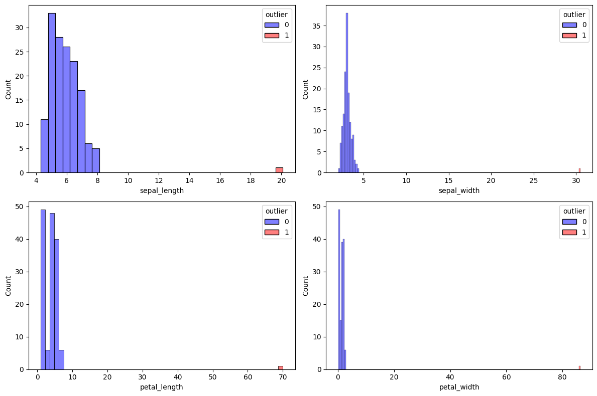

<!DOCTYPE html>


<html lang="en" data-content_root="./" >

  <head>
    <meta charset="utf-8" />
    <meta name="viewport" content="width=device-width, initial-scale=1.0" /><meta name="viewport" content="width=device-width, initial-scale=1" />

    <title>TugasPertemuan-3 &#8212; My sample book</title>
  
  
  
  <script data-cfasync="false">
    document.documentElement.dataset.mode = localStorage.getItem("mode") || "";
    document.documentElement.dataset.theme = localStorage.getItem("theme") || "";
  </script>
  
  <!-- Loaded before other Sphinx assets -->
  <link href="_static/styles/theme.css?digest=dfe6caa3a7d634c4db9b" rel="stylesheet" />
<link href="_static/styles/bootstrap.css?digest=dfe6caa3a7d634c4db9b" rel="stylesheet" />
<link href="_static/styles/pydata-sphinx-theme.css?digest=dfe6caa3a7d634c4db9b" rel="stylesheet" />

  
  <link href="_static/vendor/fontawesome/6.5.2/css/all.min.css?digest=dfe6caa3a7d634c4db9b" rel="stylesheet" />
  <link rel="preload" as="font" type="font/woff2" crossorigin href="_static/vendor/fontawesome/6.5.2/webfonts/fa-solid-900.woff2" />
<link rel="preload" as="font" type="font/woff2" crossorigin href="_static/vendor/fontawesome/6.5.2/webfonts/fa-brands-400.woff2" />
<link rel="preload" as="font" type="font/woff2" crossorigin href="_static/vendor/fontawesome/6.5.2/webfonts/fa-regular-400.woff2" />

    <link rel="stylesheet" type="text/css" href="_static/pygments.css?v=03e43079" />
    <link rel="stylesheet" type="text/css" href="_static/styles/sphinx-book-theme.css?v=eba8b062" />
    <link rel="stylesheet" type="text/css" href="_static/togglebutton.css?v=13237357" />
    <link rel="stylesheet" type="text/css" href="_static/copybutton.css?v=76b2166b" />
    <link rel="stylesheet" type="text/css" href="_static/mystnb.4510f1fc1dee50b3e5859aac5469c37c29e427902b24a333a5f9fcb2f0b3ac41.css" />
    <link rel="stylesheet" type="text/css" href="_static/sphinx-thebe.css?v=4fa983c6" />
    <link rel="stylesheet" type="text/css" href="_static/sphinx-design.min.css?v=95c83b7e" />
  
  <!-- Pre-loaded scripts that we'll load fully later -->
  <link rel="preload" as="script" href="_static/scripts/bootstrap.js?digest=dfe6caa3a7d634c4db9b" />
<link rel="preload" as="script" href="_static/scripts/pydata-sphinx-theme.js?digest=dfe6caa3a7d634c4db9b" />
  <script src="_static/vendor/fontawesome/6.5.2/js/all.min.js?digest=dfe6caa3a7d634c4db9b"></script>

    <script src="_static/documentation_options.js?v=9eb32ce0"></script>
    <script src="_static/doctools.js?v=9a2dae69"></script>
    <script src="_static/sphinx_highlight.js?v=dc90522c"></script>
    <script src="_static/clipboard.min.js?v=a7894cd8"></script>
    <script src="_static/copybutton.js?v=f281be69"></script>
    <script src="_static/scripts/sphinx-book-theme.js?v=887ef09a"></script>
    <script>let toggleHintShow = 'Click to show';</script>
    <script>let toggleHintHide = 'Click to hide';</script>
    <script>let toggleOpenOnPrint = 'true';</script>
    <script src="_static/togglebutton.js?v=4a39c7ea"></script>
    <script>var togglebuttonSelector = '.toggle, .admonition.dropdown';</script>
    <script src="_static/design-tabs.js?v=f930bc37"></script>
    <script>const THEBE_JS_URL = "https://unpkg.com/thebe@0.8.2/lib/index.js"; const thebe_selector = ".thebe,.cell"; const thebe_selector_input = "pre"; const thebe_selector_output = ".output, .cell_output"</script>
    <script async="async" src="_static/sphinx-thebe.js?v=c100c467"></script>
    <script>var togglebuttonSelector = '.toggle, .admonition.dropdown';</script>
    <script>const THEBE_JS_URL = "https://unpkg.com/thebe@0.8.2/lib/index.js"; const thebe_selector = ".thebe,.cell"; const thebe_selector_input = "pre"; const thebe_selector_output = ".output, .cell_output"</script>
    <script>window.MathJax = {"options": {"processHtmlClass": "tex2jax_process|mathjax_process|math|output_area"}}</script>
    <script defer="defer" src="https://cdn.jsdelivr.net/npm/mathjax@3/es5/tex-mml-chtml.js"></script>
    <script>DOCUMENTATION_OPTIONS.pagename = 'TugasPertemuan3';</script>
    <link rel="index" title="Index" href="genindex.html" />
    <link rel="search" title="Search" href="search.html" />
    <link rel="prev" title="Data Understanding(Memahami Data)" href="Tugas_PenambanganDATAD.html" />
  <meta name="viewport" content="width=device-width, initial-scale=1"/>
  <meta name="docsearch:language" content="en"/>
  </head>
  
  
  <body data-bs-spy="scroll" data-bs-target=".bd-toc-nav" data-offset="180" data-bs-root-margin="0px 0px -60%" data-default-mode="">

  
  
  <div id="pst-skip-link" class="skip-link d-print-none"><a href="#main-content">Skip to main content</a></div>
  
  <div id="pst-scroll-pixel-helper"></div>
  
  <button type="button" class="btn rounded-pill" id="pst-back-to-top">
    <i class="fa-solid fa-arrow-up"></i>Back to top</button>

  
  <input type="checkbox"
          class="sidebar-toggle"
          id="pst-primary-sidebar-checkbox"/>
  <label class="overlay overlay-primary" for="pst-primary-sidebar-checkbox"></label>
  
  <input type="checkbox"
          class="sidebar-toggle"
          id="pst-secondary-sidebar-checkbox"/>
  <label class="overlay overlay-secondary" for="pst-secondary-sidebar-checkbox"></label>
  
  <div class="search-button__wrapper">
    <div class="search-button__overlay"></div>
    <div class="search-button__search-container">
<form class="bd-search d-flex align-items-center"
      action="search.html"
      method="get">
  <i class="fa-solid fa-magnifying-glass"></i>
  <input type="search"
         class="form-control"
         name="q"
         id="search-input"
         placeholder="Search this book..."
         aria-label="Search this book..."
         autocomplete="off"
         autocorrect="off"
         autocapitalize="off"
         spellcheck="false"/>
  <span class="search-button__kbd-shortcut"><kbd class="kbd-shortcut__modifier">Ctrl</kbd>+<kbd>K</kbd></span>
</form></div>
  </div>

  <div class="pst-async-banner-revealer d-none">
  <aside id="bd-header-version-warning" class="d-none d-print-none" aria-label="Version warning"></aside>
</div>

  
    <header class="bd-header navbar navbar-expand-lg bd-navbar d-print-none">
    </header>
  

  <div class="bd-container">
    <div class="bd-container__inner bd-page-width">
      
      
      
      <div class="bd-sidebar-primary bd-sidebar">
        

  
  <div class="sidebar-header-items sidebar-primary__section">
    
    
    
    
  </div>
  
    <div class="sidebar-primary-items__start sidebar-primary__section">
        <div class="sidebar-primary-item">

  
    
  

<a class="navbar-brand logo" href="intro.html">
  
  
  
  
  
    
    
      
    
    
    
    <script>document.write(``);</script>
  
  
</a></div>
        <div class="sidebar-primary-item">

 <script>
 document.write(`
   <button class="btn search-button-field search-button__button" title="Search" aria-label="Search" data-bs-placement="bottom" data-bs-toggle="tooltip">
    <i class="fa-solid fa-magnifying-glass"></i>
    <span class="search-button__default-text">Search</span>
    <span class="search-button__kbd-shortcut"><kbd class="kbd-shortcut__modifier">Ctrl</kbd>+<kbd class="kbd-shortcut__modifier">K</kbd></span>
   </button>
 `);
 </script></div>
        <div class="sidebar-primary-item"><nav class="bd-links bd-docs-nav" aria-label="Main">
    <div class="bd-toc-item navbar-nav active">
        
        <ul class="nav bd-sidenav bd-sidenav__home-link">
            <li class="toctree-l1">
                <a class="reference internal" href="intro.html">
                    Selamat Datang di dokumentasi Matakuliah Data Mininng
                </a>
            </li>
        </ul>
        <ul class="current nav bd-sidenav">
<li class="toctree-l1"><a class="reference internal" href="Tugas_PenambanganDATAD.html">Data Understanding(Memahami Data)</a></li>

<li class="toctree-l1 current active"><a class="current reference internal" href="#"><strong>TugasPertemuan-3</strong></a></li>

</ul>

    </div>
</nav></div>
    </div>
  
  
  <div class="sidebar-primary-items__end sidebar-primary__section">
  </div>
  
  <div id="rtd-footer-container"></div>


      </div>
      
      <main id="main-content" class="bd-main" role="main">
        
        

<div class="sbt-scroll-pixel-helper"></div>

          <div class="bd-content">
            <div class="bd-article-container">
              
              <div class="bd-header-article d-print-none">
<div class="header-article-items header-article__inner">
  
    <div class="header-article-items__start">
      
        <div class="header-article-item"><button class="sidebar-toggle primary-toggle btn btn-sm" title="Toggle primary sidebar" data-bs-placement="bottom" data-bs-toggle="tooltip">
  <span class="fa-solid fa-bars"></span>
</button></div>
      
    </div>
  
  
    <div class="header-article-items__end">
      
        <div class="header-article-item">

<div class="article-header-buttons">


<div class="dropdown dropdown-source-buttons">
  <button class="btn dropdown-toggle" type="button" data-bs-toggle="dropdown" aria-expanded="false" aria-label="Source repositories">
    <i class="fab fa-github"></i>
  </button>
  <ul class="dropdown-menu">
      
      
      
      <li><a href="https://github.com/rendydevanodanendra/pendataD" target="_blank"
   class="btn btn-sm btn-source-repository-button dropdown-item"
   title="Source repository"
   data-bs-placement="left" data-bs-toggle="tooltip"
>
  

<span class="btn__icon-container">
  <i class="fab fa-github"></i>
  </span>
<span class="btn__text-container">Repository</span>
</a>
</li>
      
      
      
      
      <li><a href="https://github.com/rendydevanodanendra/pendataD/issues/new?title=Issue%20on%20page%20%2FTugasPertemuan3.html&body=Your%20issue%20content%20here." target="_blank"
   class="btn btn-sm btn-source-issues-button dropdown-item"
   title="Open an issue"
   data-bs-placement="left" data-bs-toggle="tooltip"
>
  

<span class="btn__icon-container">
  <i class="fas fa-lightbulb"></i>
  </span>
<span class="btn__text-container">Open issue</span>
</a>
</li>
      
  </ul>
</div>


<div class="dropdown dropdown-download-buttons">
  <button class="btn dropdown-toggle" type="button" data-bs-toggle="dropdown" aria-expanded="false" aria-label="Download this page">
    <i class="fas fa-download"></i>
  </button>
  <ul class="dropdown-menu">
      
      
      
      <li><a href="_sources/TugasPertemuan3.ipynb" target="_blank"
   class="btn btn-sm btn-download-source-button dropdown-item"
   title="Download source file"
   data-bs-placement="left" data-bs-toggle="tooltip"
>
  

<span class="btn__icon-container">
  <i class="fas fa-file"></i>
  </span>
<span class="btn__text-container">.ipynb</span>
</a>
</li>
      
      
      
      
      <li>
<button onclick="window.print()"
  class="btn btn-sm btn-download-pdf-button dropdown-item"
  title="Print to PDF"
  data-bs-placement="left" data-bs-toggle="tooltip"
>
  

<span class="btn__icon-container">
  <i class="fas fa-file-pdf"></i>
  </span>
<span class="btn__text-container">.pdf</span>
</button>
</li>
      
  </ul>
</div>


<button onclick="toggleFullScreen()"
  class="btn btn-sm btn-fullscreen-button"
  title="Fullscreen mode"
  data-bs-placement="bottom" data-bs-toggle="tooltip"
>
  

<span class="btn__icon-container">
  <i class="fas fa-expand"></i>
  </span>

</button>


<script>
document.write(`
  <button class="btn btn-sm nav-link pst-navbar-icon theme-switch-button" title="light/dark" aria-label="light/dark" data-bs-placement="bottom" data-bs-toggle="tooltip">
    <i class="theme-switch fa-solid fa-sun fa-lg" data-mode="light"></i>
    <i class="theme-switch fa-solid fa-moon fa-lg" data-mode="dark"></i>
    <i class="theme-switch fa-solid fa-circle-half-stroke fa-lg" data-mode="auto"></i>
  </button>
`);
</script>


<script>
document.write(`
  <button class="btn btn-sm pst-navbar-icon search-button search-button__button" title="Search" aria-label="Search" data-bs-placement="bottom" data-bs-toggle="tooltip">
    <i class="fa-solid fa-magnifying-glass fa-lg"></i>
  </button>
`);
</script>
<button class="sidebar-toggle secondary-toggle btn btn-sm" title="Toggle secondary sidebar" data-bs-placement="bottom" data-bs-toggle="tooltip">
    <span class="fa-solid fa-list"></span>
</button>
</div></div>
      
    </div>
  
</div>
</div>
              
              

<div id="jb-print-docs-body" class="onlyprint">
    <h1>TugasPertemuan-3</h1>
    <!-- Table of contents -->
    <div id="print-main-content">
        <div id="jb-print-toc">
            
            <div>
                <h2> Contents </h2>
            </div>
            <nav aria-label="Page">
                <ul class="visible nav section-nav flex-column">
<li class="toc-h1 nav-item toc-entry"><a class="reference internal nav-link" href="#"><strong>TugasPertemuan-3</strong></a><ul class="visible nav section-nav flex-column">
<li class="toc-h2 nav-item toc-entry"><a class="reference internal nav-link" href="#macam-macam-tipe-data-dalam-data-mining"><strong>Macam-Macam Tipe Data dalam Data Mining</strong></a></li>
<li class="toc-h2 nav-item toc-entry"><a class="reference internal nav-link" href="#atribut-kualitatif"><strong>1. Atribut Kualitatif</strong></a><ul class="nav section-nav flex-column">
<li class="toc-h3 nav-item toc-entry"><a class="reference internal nav-link" href="#a-nominal-kategorikal"><strong>a. Nominal (Kategorikal)</strong></a></li>
<li class="toc-h3 nav-item toc-entry"><a class="reference internal nav-link" href="#b-ordinal"><strong>b. Ordinal</strong></a></li>
<li class="toc-h3 nav-item toc-entry"><a class="reference internal nav-link" href="#c-biner"><strong>c. Biner</strong></a></li>
</ul>
</li>
<li class="toc-h2 nav-item toc-entry"><a class="reference internal nav-link" href="#atribut-kuantitatif"><strong>2. Atribut Kuantitatif</strong></a><ul class="nav section-nav flex-column">
<li class="toc-h3 nav-item toc-entry"><a class="reference internal nav-link" href="#a-diskrit"><strong>a. Diskrit</strong></a></li>
<li class="toc-h3 nav-item toc-entry"><a class="reference internal nav-link" href="#b-kontinu"><strong>b. Kontinu</strong></a></li>
</ul>
</li>
</ul>
</li>
<li class="toc-h1 nav-item toc-entry"><a class="reference internal nav-link" href="#pengertian-algoritma-k-nearest-neighbor-knn"><strong>Pengertian Algoritma K-Nearest Neighbor</strong> (KNN)</a><ul class="visible nav section-nav flex-column">
<li class="toc-h2 nav-item toc-entry"><a class="reference internal nav-link" href="#cara-kerja-algoritma-k-nearest-neighbor-knn"><strong>Cara Kerja Algoritma K-Nearest Neighbor (KNN)</strong></a></li>
<li class="toc-h2 nav-item toc-entry"><a class="reference internal nav-link" href="#contoh-kasus-perhitungan-k-nn"><strong>Contoh Kasus Perhitungan K-NN</strong></a><ul class="nav section-nav flex-column">
<li class="toc-h3 nav-item toc-entry"><a class="reference internal nav-link" href="#dalam-konteks-knn-ada-tiga-metode-pengukuran-jarak-yang-sering-disebutkan"><strong>Dalam konteks KNN ada tiga metode pengukuran jarak yang sering disebutkan:</strong></a></li>
<li class="toc-h3 nav-item toc-entry"><a class="reference internal nav-link" href="#jenis-jenis-metrik-jarak">Jenis-Jenis Metrik jarak</a></li>
<li class="toc-h3 nav-item toc-entry"><a class="reference internal nav-link" href="#pemilihan-nilai-k">Pemilihan Nilai K :</a></li>
</ul>
</li>
<li class="toc-h2 nav-item toc-entry"><a class="reference internal nav-link" href="#dataset-baru"><strong>Dataset Baru</strong></a></li>
<li class="toc-h2 nav-item toc-entry"><a class="reference internal nav-link" href="#menghitung-jarak-dengan-euclidean-distance"><strong>1. Menghitung Jarak dengan Euclidean Distance</strong></a></li>
<li class="toc-h2 nav-item toc-entry"><a class="reference internal nav-link" href="#merangking-data-secara-ascending-kecil-besar"><strong>2. Merangking Data Secara Ascending (Kecil → Besar)</strong></a></li>
<li class="toc-h2 nav-item toc-entry"><a class="reference internal nav-link" href="#menentukan-nilai-k-3"><strong>3. Menentukan Nilai K = 3</strong></a><ul class="nav section-nav flex-column">
<li class="toc-h3 nav-item toc-entry"><a class="reference internal nav-link" href="#selanjutnya-saya-mendeteksi-outlier-menggunakan-model-knn-dengan-metode-euclidean-distance-lalu-memvisualisasikannya-menggunakan-seaborn-dan-matplotlib"><strong>Selanjutnya saya mendeteksi outlier menggunakan model KNN dengan metode euclidean distance lalu memvisualisasikannya menggunakan Seaborn dan Matplotlib.</strong></a></li>
</ul>
</li>
</ul>
</li>
</ul>

            </nav>
        </div>
    </div>
</div>

              
                
<div id="searchbox"></div>
                <article class="bd-article">
                  
  <section class="tex2jax_ignore mathjax_ignore" id="tugaspertemuan-3">
<h1><strong>TugasPertemuan-3</strong><a class="headerlink" href="#tugaspertemuan-3" title="Link to this heading">#</a></h1>
<ul class="simple">
<li><p>Macam-macam Tipe data</p></li>
<li><p>Medeteksi Outlier menggunakan mode KNN metode euclidean distance</p></li>
</ul>
<section id="macam-macam-tipe-data-dalam-data-mining">
<h2><strong>Macam-Macam Tipe Data dalam Data Mining</strong><a class="headerlink" href="#macam-macam-tipe-data-dalam-data-mining" title="Link to this heading">#</a></h2>
</section>
<section id="atribut-kualitatif">
<h2><strong>1. Atribut Kualitatif</strong><a class="headerlink" href="#atribut-kualitatif" title="Link to this heading">#</a></h2>
<p>Atribut kualitatif merepresentasikan kategori atau karakteristik suatu objek yang tidak berupa angka. Data ini digunakan untuk mengelompokkan objek berdasarkan kesamaan karakteristik dan tidak dapat dihitung secara matematis.</p>
<section id="a-nominal-kategorikal">
<h3><strong>a. Nominal (Kategorikal)</strong><a class="headerlink" href="#a-nominal-kategorikal" title="Link to this heading">#</a></h3>
<p>Atribut nominal hanya digunakan untuk memberi label atau kategori pada suatu objek tanpa memiliki urutan atau tingkatan tertentu. Data ini tidak memiliki makna numerik dan tidak dapat dilakukan operasi matematika seperti penjumlahan atau pengurangan.<br />
<strong>Contoh:</strong></p>
<ul class="simple">
<li><p>Warna rambut: <strong>Hitam, Coklat, Pirang</strong></p></li>
<li><p>Jenis kelamin: <strong>Laki-laki, Perempuan</strong></p></li>
<li><p>Merek kendaraan: <strong>Toyota, Honda, BMW</strong></p></li>
</ul>
</section>
<section id="b-ordinal">
<h3><strong>b. Ordinal</strong><a class="headerlink" href="#b-ordinal" title="Link to this heading">#</a></h3>
<p>Atribut ordinal memiliki kategori dengan urutan atau tingkatan tertentu, tetapi jarak antar kategori tidak bisa diukur secara pasti.<br />
<strong>Contoh:</strong></p>
<ul class="simple">
<li><p>Tingkat pendidikan: <strong>SD, SMP, SMA, S1, S2, S3</strong></p></li>
<li><p>Tingkat kepuasan pelanggan: <strong>Sangat Puas, Puas, Netral, Tidak Puas, Sangat Tidak Puas</strong></p></li>
<li><p>Risiko investasi: <strong>Rendah, Sedang, Tinggi</strong></p></li>
</ul>
</section>
<section id="c-biner">
<h3><strong>c. Biner</strong><a class="headerlink" href="#c-biner" title="Link to this heading">#</a></h3>
<p>Atribut biner hanya memiliki dua kemungkinan nilai, seperti 0 dan 1, atau Ya dan Tidak.<br />
<strong>Contoh:</strong></p>
<ul class="simple">
<li><p>Status pernikahan: <strong>Menikah (1), Belum Menikah (0)</strong></p></li>
<li><p>Kepemilikan rumah: <strong>Ya (1), Tidak (0)</strong></p></li>
<li><p>Hasil tes COVID-19: <strong>Positif (1), Negatif (0)</strong><br />
Atribut biner dapat dibedakan menjadi:</p></li>
<li><p><strong>Simetris:</strong> Kedua nilai memiliki kepentingan yang sama, misalnya <strong>jenis kelamin (Laki-laki/Perempuan)</strong>.</p></li>
<li><p><strong>Asimetris:</strong> Salah satu nilai lebih penting dari yang lain, misalnya <strong>dalam deteksi penipuan, 1 berarti transaksi mencurigakan (lebih penting), sementara 0 berarti normal</strong>.</p></li>
</ul>
</section>
</section>
<section id="atribut-kuantitatif">
<h2><strong>2. Atribut Kuantitatif</strong><a class="headerlink" href="#atribut-kuantitatif" title="Link to this heading">#</a></h2>
<p>Atribut kuantitatif merepresentasikan nilai numerik yang dapat dihitung dan dianalisis secara matematis.</p>
<section id="a-diskrit">
<h3><strong>a. Diskrit</strong><a class="headerlink" href="#a-diskrit" title="Link to this heading">#</a></h3>
<p>Atribut diskrit hanya bisa memiliki nilai dalam jumlah terbatas, biasanya dalam bentuk bilangan bulat yang diperoleh dari hasil perhitungan (counting).<br />
<strong>Contoh:</strong></p>
<ul class="simple">
<li><p>Jumlah anak dalam keluarga: <strong>0, 1, 2, 3, …</strong></p></li>
<li><p>Jumlah kendaraan di parkiran: <strong>5, 10, 15</strong></p></li>
<li><p>Jumlah siswa dalam kelas: <strong>25, 30, 35</strong></p></li>
</ul>
</section>
<section id="b-kontinu">
<h3><strong>b. Kontinu</strong><a class="headerlink" href="#b-kontinu" title="Link to this heading">#</a></h3>
<p>Atribut kontinu memiliki nilai yang dapat berupa pecahan atau desimal karena diperoleh dari hasil pengukuran (measurement).<br />
<strong>Contoh:</strong></p>
<ul class="simple">
<li><p>Tinggi badan: <strong>165.3 cm, 170.5 cm</strong></p></li>
<li><p>Berat badan: <strong>60.5 kg, 75.8 kg</strong></p></li>
<li><p>Suhu udara: <strong>28.7°C, 35.2°C</strong></p></li>
</ul>
</section>
</section>
</section>
<section class="tex2jax_ignore mathjax_ignore" id="pengertian-algoritma-k-nearest-neighbor-knn">
<h1><strong>Pengertian Algoritma K-Nearest Neighbor</strong> (KNN)<a class="headerlink" href="#pengertian-algoritma-k-nearest-neighbor-knn" title="Link to this heading">#</a></h1>
<p>Algoritma k-nearest neighbor (k-NN atau KNN) adalah metode yang digunakan untuk melakukan klasifikasi terhadap objek berdasarkan data pembelajaran yang jaraknya paling dekat dengan objek tersebut. K-Nearest Neighbor berdasarkan konsep ‘learning by analogy’.</p>
<p>Data learning dideskripsikan dengan atribut numerik n-dimensi. Tiap data learning merepresentasikan sebuah titik, yang ditandai dengan c, dalam ruang n-dimensi. Jika sebuah data query yang labelnya tidak diketahui diinputkan, maka K-Nearest Neighbor akan mencari k buah data learning yang jaraknya paling dekat dengan data query dalam ruang n-dimensi.</p>
<section id="cara-kerja-algoritma-k-nearest-neighbor-knn">
<h2><strong>Cara Kerja Algoritma K-Nearest Neighbor (KNN)</strong><a class="headerlink" href="#cara-kerja-algoritma-k-nearest-neighbor-knn" title="Link to this heading">#</a></h2>
<p>Jarak antara data query dengan data learning dihitung dengan cara mengukur jarak antara titik yang merepresentasikan data query dengan semua titik yang merepresentasikan data learning dengan rumus Euclidean Distance.</p>
<p>Pada fase klasifikasi, tweet sama dihitung untuk testing data (klasifikasinya belum diketahui). Jarak dari vektor yang baru ini terhadap seluruh vektor training sample dihitung, dan sejumlah k buah yang paling dekat diambil.</p>
<p>Titik yang baru klasifikasinya diprediksikan termasuk pada klasifikasi terbanyak dari titik – titik tersebut. Nilai k yang terbaik untuk algoritma ini tergantung pada data; secara umumnya, nilai k yang tinggi akan mengurangi efek noise pada klasifikasi, tetapi membuat batasan antara setiap klasifikasi menjadi lebih kabur. Nilai k yang bagus dapat dipilih dengan optimasi parameter, misalnya dengan menggunakan cross-validation.</p>
</section>
<section id="contoh-kasus-perhitungan-k-nn">
<h2><strong>Contoh Kasus Perhitungan K-NN</strong><a class="headerlink" href="#contoh-kasus-perhitungan-k-nn" title="Link to this heading">#</a></h2>
<p>Algoritma K-NN merupakan algoritma yang diharapkan bisa melakukan prediksi. Cara yang digunakan sangat sederhana. Cukup menghitung jarak terdekat. Artinya, apabila ada input objek baru yang tak dikenali, algoritma knn akan mencari objek terdekat di dalam database, lalu melakukan tindakan   yang sesuai dengan objek terdekatnya. Sesuai dengan namanya KNN (K Nearest Neighbors).  Jadi, tindakan yang didasarkan pada apa yang dilakukan kepada objek terdekat adalah tindakan prediksi.</p>
<section id="dalam-konteks-knn-ada-tiga-metode-pengukuran-jarak-yang-sering-disebutkan">
<h3><strong>Dalam konteks KNN ada tiga metode pengukuran jarak yang sering disebutkan:</strong><a class="headerlink" href="#dalam-konteks-knn-ada-tiga-metode-pengukuran-jarak-yang-sering-disebutkan" title="Link to this heading">#</a></h3>
<p>Euclidean Distance
Menghitung jarak “lurus” (garis lurus) antara dua titik. Rumusnya melibatkan akar kuadrat dari jumlah kuadrat perbedaan tiap fitur.</p>
<p>Manhattan Distance
Menghitung jarak berdasarkan pergerakan di grid (seperti menghitung jarak di kota dengan jalan bersebelahan). Di sini, jarak dihitung sebagai jumlah nilai mutlak perbedaan tiap fitur.</p>
<p>Minkowski Distance
Merupakan generalisasi dari Euclidean dan Manhattan Distance. Dengan parameter 𝑝  yang bisa disesuaikan, jika 𝑝 = 2maka sama dengan Euclidean, dan jika 𝑝=1  sama dengan Manhattan.</p>
</section>
<section id="jenis-jenis-metrik-jarak">
<h3>Jenis-Jenis Metrik jarak<a class="headerlink" href="#jenis-jenis-metrik-jarak" title="Link to this heading">#</a></h3>
<ol class="arabic simple">
<li><p>Euclidian Distance<br />
$<span class="math notranslate nohighlight">\(\sqrt{(x_2 - x_1)^2 + (y_2 - y_1)^2}\)</span>$</p></li>
<li><p>Manhattan Distance<br />
$<span class="math notranslate nohighlight">\(|x_2 - x_1| + |y_2 - y_1|\)</span>$</p></li>
<li><p>Minkowski Distance<br />
$<span class="math notranslate nohighlight">\(\left( |x_2 - x_1|^p + |y_2 - y_1|^p \right)^{\frac{1}{p}}\)</span>$</p></li>
</ol>
</section>
<section id="pemilihan-nilai-k">
<h3>Pemilihan Nilai K :<a class="headerlink" href="#pemilihan-nilai-k" title="Link to this heading">#</a></h3>
<ol class="arabic simple">
<li><p>Jika K kecil (K=1/K sangat kecil) :</p></li>
</ol>
<ul class="simple">
<li><p>Model sangat sensitif terhadap noise → Jika ada outlier atau data yang tidak representatif, model bisa salah memprediksi karena hanya bergantung pada satu atau sedikit tetangga.</p></li>
<li><p>Overfitting → Model terlalu spesifik terhadap data latih, sehingga kurang bisa melakukan generalisasi pada data baru.</p></li>
</ul>
<ol class="arabic simple" start="2">
<li><p>Jika K besar :</p></li>
</ol>
<ul class="simple">
<li><p>Model menjadi terlalu sederhana (underfitting) → Tidak menangkap pola lokal dalam data.</p></li>
<li><p>Prediksi lebih stabil, tetapi bisa kehilangan informasi penting karena dipengaruhi oleh terlalu banyak tetangga.</p></li>
</ul>
<ol class="arabic simple" start="3">
<li><p>Solusi : mencari nilai 𝐾 optimal dengan eksperimen, misalnya menggunakan cross-validation.</p></li>
</ol>
<p>Berikut adalah perhitungan Euclidean Distance dengan angka yang telah diubah:</p>
</section>
</section>
<section id="dataset-baru">
<h2><strong>Dataset Baru</strong><a class="headerlink" href="#dataset-baru" title="Link to this heading">#</a></h2>
<p>Misalkan kita memiliki <strong>10 titik data</strong>:</p>
<div class="pst-scrollable-table-container"><table class="table">
<thead>
<tr class="row-odd"><th class="head"><p>Class</p></th>
<th class="head"><p>x</p></th>
<th class="head"><p>y</p></th>
</tr>
</thead>
<tbody>
<tr class="row-even"><td><p>A</p></td>
<td><p>3</p></td>
<td><p>4</p></td>
</tr>
<tr class="row-odd"><td><p>A</p></td>
<td><p>4</p></td>
<td><p>6</p></td>
</tr>
<tr class="row-even"><td><p>A</p></td>
<td><p>6</p></td>
<td><p>9</p></td>
</tr>
<tr class="row-odd"><td><p>B</p></td>
<td><p>7</p></td>
<td><p>10</p></td>
</tr>
<tr class="row-even"><td><p>B</p></td>
<td><p>5</p></td>
<td><p>9</p></td>
</tr>
<tr class="row-odd"><td><p>B</p></td>
<td><p>6</p></td>
<td><p>10</p></td>
</tr>
<tr class="row-even"><td><p>A</p></td>
<td><p>7</p></td>
<td><p>6</p></td>
</tr>
<tr class="row-odd"><td><p>A</p></td>
<td><p>4</p></td>
<td><p>8</p></td>
</tr>
<tr class="row-even"><td><p>B</p></td>
<td><p>25</p></td>
<td><p>30</p></td>
</tr>
<tr class="row-odd"><td><p>?</p></td>
<td><p>4</p></td>
<td><p>3</p></td>
</tr>
</tbody>
</table>
</div>
</section>
<section id="menghitung-jarak-dengan-euclidean-distance">
<h2><strong>1. Menghitung Jarak dengan Euclidean Distance</strong><a class="headerlink" href="#menghitung-jarak-dengan-euclidean-distance" title="Link to this heading">#</a></h2>
<p>Formula:</p>
<div class="math notranslate nohighlight">
\[d = \sqrt{(x_2 - x_1)^2 + (y_2 - y_1)^2}\]</div>
<div class="math notranslate nohighlight">
\[d1 (3,4)\]</div>
<div class="math notranslate nohighlight">
\[\sqrt{(3 - 4)^2 + (4 - 3)^2} = \sqrt{1 + 1} = 1.41\]</div>
<div class="math notranslate nohighlight">
\[d2 (4,6)\]</div>
<div class="math notranslate nohighlight">
\[\sqrt{(4 - 4)^2 + (6 - 3)^2} = \sqrt{0 + 9} = 3\]</div>
<div class="math notranslate nohighlight">
\[d3 (6,9)\]</div>
<div class="math notranslate nohighlight">
\[\sqrt{(6 - 4)^2 + (9 - 3)^2} = \sqrt{4 + 36} = 6.32\]</div>
<div class="math notranslate nohighlight">
\[d4 (7,10)\]</div>
<div class="math notranslate nohighlight">
\[\sqrt{(7 - 4)^2 + (10 - 3)^2} = \sqrt{9 + 49} = 7.81\]</div>
<div class="math notranslate nohighlight">
\[d5 (5,9)\]</div>
<div class="math notranslate nohighlight">
\[\sqrt{(5 - 4)^2 + (9 - 3)^2} = \sqrt{1 + 36} = 6.08\]</div>
<div class="math notranslate nohighlight">
\[d6 (6,10)\]</div>
<div class="math notranslate nohighlight">
\[\sqrt{(6 - 4)^2 + (10 - 3)^2} = \sqrt{4 + 49} = 7.21\]</div>
<div class="math notranslate nohighlight">
\[d7 (7,6)\]</div>
<div class="math notranslate nohighlight">
\[\sqrt{(7 - 4)^2 + (6 - 3)^2} = \sqrt{9 + 9} = 4.24\]</div>
<div class="math notranslate nohighlight">
\[d8 (4,8)\]</div>
<div class="math notranslate nohighlight">
\[\sqrt{(4 - 4)^2 + (8 - 3)^2} = \sqrt{0 + 25} = 5\]</div>
<div class="math notranslate nohighlight">
\[d9 (25,30)\]</div>
<div class="math notranslate nohighlight">
\[\sqrt{(25 - 4)^2 + (30 - 3)^2} = \sqrt{441 + 729} = 32.97\]</div>
</section>
<section id="merangking-data-secara-ascending-kecil-besar">
<h2><strong>2. Merangking Data Secara Ascending (Kecil → Besar)</strong><a class="headerlink" href="#merangking-data-secara-ascending-kecil-besar" title="Link to this heading">#</a></h2>
<div class="pst-scrollable-table-container"><table class="table">
<thead>
<tr class="row-odd"><th class="head"><p>Rank</p></th>
<th class="head"><p>Jarak</p></th>
<th class="head"><p>Class</p></th>
</tr>
</thead>
<tbody>
<tr class="row-even"><td><p>1</p></td>
<td><p>1.41</p></td>
<td><p>A</p></td>
</tr>
<tr class="row-odd"><td><p>2</p></td>
<td><p>3.00</p></td>
<td><p>A</p></td>
</tr>
<tr class="row-even"><td><p>3</p></td>
<td><p>4.24</p></td>
<td><p>A</p></td>
</tr>
<tr class="row-odd"><td><p>4</p></td>
<td><p>5.00</p></td>
<td><p>A</p></td>
</tr>
<tr class="row-even"><td><p>5</p></td>
<td><p>6.08</p></td>
<td><p>B</p></td>
</tr>
<tr class="row-odd"><td><p>6</p></td>
<td><p>6.32</p></td>
<td><p>A</p></td>
</tr>
<tr class="row-even"><td><p>7</p></td>
<td><p>7.21</p></td>
<td><p>B</p></td>
</tr>
<tr class="row-odd"><td><p>8</p></td>
<td><p>7.81</p></td>
<td><p>B</p></td>
</tr>
<tr class="row-even"><td><p>9</p></td>
<td><p>32.97</p></td>
<td><p>B</p></td>
</tr>
</tbody>
</table>
</div>
</section>
<section id="menentukan-nilai-k-3">
<h2><strong>3. Menentukan Nilai K = 3</strong><a class="headerlink" href="#menentukan-nilai-k-3" title="Link to this heading">#</a></h2>
<p>Jika kita ambil <strong>K = 3</strong> (3 tetangga terdekat):</p>
<ol class="arabic simple">
<li><p><strong>1.41</strong> → Class <strong>A</strong></p></li>
<li><p><strong>3.00</strong> → Class <strong>A</strong></p></li>
<li><p><strong>4.24</strong> → Class <strong>A</strong></p></li>
</ol>
<p>🔹 <strong>Kesimpulan:</strong><br />
Poin (4,3) diklasifikasikan sebagai <strong>Class A</strong>.<br />
Data ke-9 (<strong>25,30</strong>) adalah <strong>outlier</strong> karena memiliki jarak terbesar <strong>32.97</strong>.</p>
<p>Disini saya memakai Euclidean Distance</p>
<p><br />
Dengan rumus yang sudah tertera di Gambar diatas selanjutnya saya akan mengambil data postgre dan mysql dari aiven, tapi sebelum itu saya akan menginstal beberapa library yang saya guanakan untuk mengambil data dan menghubungkan</p>
<p>Berikut penjelasan fungsi dari library yang saya install:</p>
<ol class="arabic simple">
<li><p><strong><code class="docutils literal notranslate"><span class="pre">pymysql</span></code></strong> – Digunakan untuk menghubungkan dan berinteraksi dengan database MySQL menggunakan Python.</p></li>
<li><p><strong><code class="docutils literal notranslate"><span class="pre">pandas</span></code></strong> – Digunakan untuk manipulasi data dalam bentuk tabel (DataFrame), seperti membaca, menulis, dan mengolah dataset.</p></li>
<li><p><strong><code class="docutils literal notranslate"><span class="pre">psycopg2</span></code></strong> – Digunakan untuk menghubungkan Python dengan database PostgreSQL.</p></li>
<li><p><strong><code class="docutils literal notranslate"><span class="pre">sqlalchemy</span></code></strong> – Sebuah library untuk ORM (Object-Relational Mapping), memudahkan interaksi dengan database menggunakan sintaks Python.</p></li>
<li><p><strong><code class="docutils literal notranslate"><span class="pre">seaborn</span></code></strong> – Library visualisasi berbasis <code class="docutils literal notranslate"><span class="pre">matplotlib</span></code>, digunakan untuk membuat grafik statistik yang menarik.</p></li>
<li><p><strong><code class="docutils literal notranslate"><span class="pre">numpy</span></code></strong> – Library untuk komputasi numerik, memungkinkan operasi pada array dan matriks.</p></li>
<li><p><strong><code class="docutils literal notranslate"><span class="pre">scikit-learn</span></code></strong> – Library machine learning yang digunakan untuk analisis data dan pembuatan model ML seperti KNN.</p></li>
<li><p><strong><code class="docutils literal notranslate"><span class="pre">pyod</span></code></strong> – Digunakan untuk deteksi outlier (anomali) dalam dataset menggunakan berbagai metode.</p></li>
<li><p><strong><code class="docutils literal notranslate"><span class="pre">matplotlib</span></code></strong> – Library untuk membuat grafik dan visualisasi data secara fleksibel.</p></li>
</ol>
<p>Semua library ini digunakan untuk membaca, menganalisis, mendeteksi outlier, dan memvisualisasikan data</p>
<div class="cell docutils container">
<div class="cell_input docutils container">
<div class="highlight-ipython3 notranslate"><div class="highlight"><pre><span></span><span class="o">%</span><span class="k">pip</span> install pymysql pandas psycopg2 sqlalchemy seaborn numpy pandas scikit-learn pyod matplotlib seaborn
</pre></div>
</div>
</div>
<div class="cell_output docutils container">
<div class="output stream highlight-myst-ansi notranslate"><div class="highlight"><pre><span></span>Collecting pymysql
</pre></div>
</div>
<div class="output stream highlight-myst-ansi notranslate"><div class="highlight"><pre><span></span>  Downloading PyMySQL-1.1.1-py3-none-any.whl.metadata (4.4 kB)
</pre></div>
</div>
<div class="output stream highlight-myst-ansi notranslate"><div class="highlight"><pre><span></span>Collecting pandas
  Downloading pandas-2.2.3-cp310-cp310-manylinux_2_17_x86_64.manylinux2014_x86_64.whl.metadata (89 kB)
</pre></div>
</div>
<div class="output stream highlight-myst-ansi notranslate"><div class="highlight"><pre><span></span>Collecting psycopg2
  Downloading psycopg2-2.9.10.tar.gz (385 kB)
</pre></div>
</div>
<div class="output stream highlight-myst-ansi notranslate"><div class="highlight"><pre><span></span>  Preparing metadata (setup.py) ... ?25l-
</pre></div>
</div>
<div class="output stream highlight-myst-ansi notranslate"><div class="highlight"><pre><span></span> done
?25hRequirement already satisfied: sqlalchemy in /opt/hostedtoolcache/Python/3.10.16/x64/lib/python3.10/site-packages (2.0.38)
Collecting seaborn
</pre></div>
</div>
<div class="output stream highlight-myst-ansi notranslate"><div class="highlight"><pre><span></span>  Downloading seaborn-0.13.2-py3-none-any.whl.metadata (5.4 kB)
Requirement already satisfied: numpy in /opt/hostedtoolcache/Python/3.10.16/x64/lib/python3.10/site-packages (2.2.3)
</pre></div>
</div>
<div class="output stream highlight-myst-ansi notranslate"><div class="highlight"><pre><span></span>Collecting scikit-learn
</pre></div>
</div>
<div class="output stream highlight-myst-ansi notranslate"><div class="highlight"><pre><span></span>  Downloading scikit_learn-1.6.1-cp310-cp310-manylinux_2_17_x86_64.manylinux2014_x86_64.whl.metadata (18 kB)
Collecting pyod
  Downloading pyod-2.0.3.tar.gz (169 kB)
</pre></div>
</div>
<div class="output stream highlight-myst-ansi notranslate"><div class="highlight"><pre><span></span>  Preparing metadata (setup.py) ... ?25l-
</pre></div>
</div>
<div class="output stream highlight-myst-ansi notranslate"><div class="highlight"><pre><span></span> done
?25hRequirement already satisfied: matplotlib in /opt/hostedtoolcache/Python/3.10.16/x64/lib/python3.10/site-packages (3.10.1)
Requirement already satisfied: python-dateutil&gt;=2.8.2 in /opt/hostedtoolcache/Python/3.10.16/x64/lib/python3.10/site-packages (from pandas) (2.9.0.post0)
</pre></div>
</div>
<div class="output stream highlight-myst-ansi notranslate"><div class="highlight"><pre><span></span>Collecting pytz&gt;=2020.1 (from pandas)
  Downloading pytz-2025.1-py2.py3-none-any.whl.metadata (22 kB)
</pre></div>
</div>
<div class="output stream highlight-myst-ansi notranslate"><div class="highlight"><pre><span></span>Collecting tzdata&gt;=2022.7 (from pandas)
  Downloading tzdata-2025.1-py2.py3-none-any.whl.metadata (1.4 kB)
Requirement already satisfied: greenlet!=0.4.17 in /opt/hostedtoolcache/Python/3.10.16/x64/lib/python3.10/site-packages (from sqlalchemy) (3.1.1)
Requirement already satisfied: typing-extensions&gt;=4.6.0 in /opt/hostedtoolcache/Python/3.10.16/x64/lib/python3.10/site-packages (from sqlalchemy) (4.12.2)
</pre></div>
</div>
<div class="output stream highlight-myst-ansi notranslate"><div class="highlight"><pre><span></span>Collecting scipy&gt;=1.6.0 (from scikit-learn)
  Downloading scipy-1.15.2-cp310-cp310-manylinux_2_17_x86_64.manylinux2014_x86_64.whl.metadata (61 kB)
</pre></div>
</div>
<div class="output stream highlight-myst-ansi notranslate"><div class="highlight"><pre><span></span>Collecting joblib&gt;=1.2.0 (from scikit-learn)
  Downloading joblib-1.4.2-py3-none-any.whl.metadata (5.4 kB)
Collecting threadpoolctl&gt;=3.1.0 (from scikit-learn)
  Downloading threadpoolctl-3.5.0-py3-none-any.whl.metadata (13 kB)
</pre></div>
</div>
<div class="output stream highlight-myst-ansi notranslate"><div class="highlight"><pre><span></span>Collecting numba&gt;=0.51 (from pyod)
</pre></div>
</div>
<div class="output stream highlight-myst-ansi notranslate"><div class="highlight"><pre><span></span>  Downloading numba-0.61.0-cp310-cp310-manylinux2014_x86_64.manylinux_2_17_x86_64.whl.metadata (2.8 kB)
Requirement already satisfied: contourpy&gt;=1.0.1 in /opt/hostedtoolcache/Python/3.10.16/x64/lib/python3.10/site-packages (from matplotlib) (1.3.1)
Requirement already satisfied: cycler&gt;=0.10 in /opt/hostedtoolcache/Python/3.10.16/x64/lib/python3.10/site-packages (from matplotlib) (0.12.1)
Requirement already satisfied: fonttools&gt;=4.22.0 in /opt/hostedtoolcache/Python/3.10.16/x64/lib/python3.10/site-packages (from matplotlib) (4.56.0)
Requirement already satisfied: kiwisolver&gt;=1.3.1 in /opt/hostedtoolcache/Python/3.10.16/x64/lib/python3.10/site-packages (from matplotlib) (1.4.8)
Requirement already satisfied: packaging&gt;=20.0 in /opt/hostedtoolcache/Python/3.10.16/x64/lib/python3.10/site-packages (from matplotlib) (24.2)
Requirement already satisfied: pillow&gt;=8 in /opt/hostedtoolcache/Python/3.10.16/x64/lib/python3.10/site-packages (from matplotlib) (11.1.0)
Requirement already satisfied: pyparsing&gt;=2.3.1 in /opt/hostedtoolcache/Python/3.10.16/x64/lib/python3.10/site-packages (from matplotlib) (3.2.1)
</pre></div>
</div>
<div class="output stream highlight-myst-ansi notranslate"><div class="highlight"><pre><span></span>Collecting llvmlite&lt;0.45,&gt;=0.44.0dev0 (from numba&gt;=0.51-&gt;pyod)
  Downloading llvmlite-0.44.0-cp310-cp310-manylinux_2_17_x86_64.manylinux2014_x86_64.whl.metadata (4.8 kB)
</pre></div>
</div>
<div class="output stream highlight-myst-ansi notranslate"><div class="highlight"><pre><span></span>Collecting numpy
  Downloading numpy-2.1.3-cp310-cp310-manylinux_2_17_x86_64.manylinux2014_x86_64.whl.metadata (62 kB)
Requirement already satisfied: six&gt;=1.5 in /opt/hostedtoolcache/Python/3.10.16/x64/lib/python3.10/site-packages (from python-dateutil&gt;=2.8.2-&gt;pandas) (1.17.0)
</pre></div>
</div>
<div class="output stream highlight-myst-ansi notranslate"><div class="highlight"><pre><span></span>Downloading PyMySQL-1.1.1-py3-none-any.whl (44 kB)
Downloading pandas-2.2.3-cp310-cp310-manylinux_2_17_x86_64.manylinux2014_x86_64.whl (13.1 MB)
?25l   ━━━━━━━━━━━━━━━━━━━━━━━━━━━━━━━━━━━━━━━━ <span class=" -Color -Color-Green">0.0/13.1 MB</span> <span class=" -Color -Color-Red">?</span> eta <span class=" -Color -Color-Cyan">-:--:--</span>
</pre></div>
</div>
<div class="output stream highlight-myst-ansi notranslate"><div class="highlight"><pre><span></span>   ━━━━━━━━━━━━━━━━━━━━━━━━━━━━━━━━━━━━━━━━ <span class=" -Color -Color-Green">13.1/13.1 MB</span> <span class=" -Color -Color-Red">170.4 MB/s</span> eta <span class=" -Color -Color-Cyan">0:00:00</span>
?25hDownloading seaborn-0.13.2-py3-none-any.whl (294 kB)
</pre></div>
</div>
<div class="output stream highlight-myst-ansi notranslate"><div class="highlight"><pre><span></span>Downloading scikit_learn-1.6.1-cp310-cp310-manylinux_2_17_x86_64.manylinux2014_x86_64.whl (13.5 MB)
?25l   ━━━━━━━━━━━━━━━━━━━━━━━━━━━━━━━━━━━━━━━━ <span class=" -Color -Color-Green">0.0/13.5 MB</span> <span class=" -Color -Color-Red">?</span> eta <span class=" -Color -Color-Cyan">-:--:--</span>
</pre></div>
</div>
<div class="output stream highlight-myst-ansi notranslate"><div class="highlight"><pre><span></span>   ━━━━━━━━━━━━━━━━━━━━━━━━━━━━━━━━━━━━━━━━ <span class=" -Color -Color-Green">13.5/13.5 MB</span> <span class=" -Color -Color-Red">158.4 MB/s</span> eta <span class=" -Color -Color-Cyan">0:00:00</span>
?25hDownloading joblib-1.4.2-py3-none-any.whl (301 kB)
</pre></div>
</div>
<div class="output stream highlight-myst-ansi notranslate"><div class="highlight"><pre><span></span>Downloading numba-0.61.0-cp310-cp310-manylinux2014_x86_64.manylinux_2_17_x86_64.whl (3.8 MB)
?25l   ━━━━━━━━━━━━━━━━━━━━━━━━━━━━━━━━━━━━━━━━ <span class=" -Color -Color-Green">0.0/3.8 MB</span> <span class=" -Color -Color-Red">?</span> eta <span class=" -Color -Color-Cyan">-:--:--</span>
   ━━━━━━━━━━━━━━━━━━━━━━━━━━━━━━━━━━━━━━━━ <span class=" -Color -Color-Green">3.8/3.8 MB</span> <span class=" -Color -Color-Red">165.8 MB/s</span> eta <span class=" -Color -Color-Cyan">0:00:00</span>
?25hDownloading numpy-2.1.3-cp310-cp310-manylinux_2_17_x86_64.manylinux2014_x86_64.whl (16.3 MB)
?25l
</pre></div>
</div>
<div class="output stream highlight-myst-ansi notranslate"><div class="highlight"><pre><span></span>   ━━━━━━━━━━━━━━━━━━━━━━━━━━━━━━━━━━━━━━━━ <span class=" -Color -Color-Green">0.0/16.3 MB</span> <span class=" -Color -Color-Red">?</span> eta <span class=" -Color -Color-Cyan">-:--:--</span>
</pre></div>
</div>
<div class="output stream highlight-myst-ansi notranslate"><div class="highlight"><pre><span></span>   ━━━━━━━━━━━━━━━━━━━━━━━━━━━━━━━━━━━━━━━━ <span class=" -Color -Color-Green">16.3/16.3 MB</span> <span class=" -Color -Color-Red">178.0 MB/s</span> eta <span class=" -Color -Color-Cyan">0:00:00</span>
?25h
</pre></div>
</div>
<div class="output stream highlight-myst-ansi notranslate"><div class="highlight"><pre><span></span>Downloading pytz-2025.1-py2.py3-none-any.whl (507 kB)
Downloading scipy-1.15.2-cp310-cp310-manylinux_2_17_x86_64.manylinux2014_x86_64.whl (37.6 MB)
?25l   ━━━━━━━━━━━━━━━━━━━━━━━━━━━━━━━━━━━━━━━━ <span class=" -Color -Color-Green">0.0/37.6 MB</span> <span class=" -Color -Color-Red">?</span> eta <span class=" -Color -Color-Cyan">-:--:--</span>
</pre></div>
</div>
<div class="output stream highlight-myst-ansi notranslate"><div class="highlight"><pre><span></span>   ━━━━━━━━━━━━━━━━━━━━━━━━━━━━━━━━━━━━━━━╸ <span class=" -Color -Color-Green">37.5/37.6 MB</span> <span class=" -Color -Color-Red">286.1 MB/s</span> eta <span class=" -Color -Color-Cyan">0:00:01</span>
   ━━━━━━━━━━━━━━━━━━━━━━━━━━━━━━━━━━━━━━━━ <span class=" -Color -Color-Green">37.6/37.6 MB</span> <span class=" -Color -Color-Red">184.6 MB/s</span> eta <span class=" -Color -Color-Cyan">0:00:00</span>
?25hDownloading threadpoolctl-3.5.0-py3-none-any.whl (18 kB)
Downloading tzdata-2025.1-py2.py3-none-any.whl (346 kB)
</pre></div>
</div>
<div class="output stream highlight-myst-ansi notranslate"><div class="highlight"><pre><span></span>Downloading llvmlite-0.44.0-cp310-cp310-manylinux_2_17_x86_64.manylinux2014_x86_64.whl (42.4 MB)
?25l   ━━━━━━━━━━━━━━━━━━━━━━━━━━━━━━━━━━━━━━━━ <span class=" -Color -Color-Green">0.0/42.4 MB</span> <span class=" -Color -Color-Red">?</span> eta <span class=" -Color -Color-Cyan">-:--:--</span>
</pre></div>
</div>
<div class="output stream highlight-myst-ansi notranslate"><div class="highlight"><pre><span></span>   ━━━━━━━━━━━━━━━━━━━━━━━━━━━━━━━━━━━━━━━╸ <span class=" -Color -Color-Green">42.2/42.4 MB</span> <span class=" -Color -Color-Red">275.1 MB/s</span> eta <span class=" -Color -Color-Cyan">0:00:01</span>
   ━━━━━━━━━━━━━━━━━━━━━━━━━━━━━━━━━━━━━━━━ <span class=" -Color -Color-Green">42.4/42.4 MB</span> <span class=" -Color -Color-Red">177.4 MB/s</span> eta <span class=" -Color -Color-Cyan">0:00:00</span>
?25h
</pre></div>
</div>
<div class="output stream highlight-myst-ansi notranslate"><div class="highlight"><pre><span></span>Building wheels for collected packages: psycopg2, pyod
</pre></div>
</div>
<div class="output stream highlight-myst-ansi notranslate"><div class="highlight"><pre><span></span>  Building wheel for psycopg2 (setup.py) ... ?25l-
</pre></div>
</div>
<div class="output stream highlight-myst-ansi notranslate"><div class="highlight"><pre><span></span> \
</pre></div>
</div>
<div class="output stream highlight-myst-ansi notranslate"><div class="highlight"><pre><span></span> |
</pre></div>
</div>
<div class="output stream highlight-myst-ansi notranslate"><div class="highlight"><pre><span></span> /
</pre></div>
</div>
<div class="output stream highlight-myst-ansi notranslate"><div class="highlight"><pre><span></span> -
</pre></div>
</div>
<div class="output stream highlight-myst-ansi notranslate"><div class="highlight"><pre><span></span> \
</pre></div>
</div>
<div class="output stream highlight-myst-ansi notranslate"><div class="highlight"><pre><span></span> |
</pre></div>
</div>
<div class="output stream highlight-myst-ansi notranslate"><div class="highlight"><pre><span></span> /
</pre></div>
</div>
<div class="output stream highlight-myst-ansi notranslate"><div class="highlight"><pre><span></span> -
</pre></div>
</div>
<div class="output stream highlight-myst-ansi notranslate"><div class="highlight"><pre><span></span> \
</pre></div>
</div>
<div class="output stream highlight-myst-ansi notranslate"><div class="highlight"><pre><span></span> |
</pre></div>
</div>
<div class="output stream highlight-myst-ansi notranslate"><div class="highlight"><pre><span></span> /
</pre></div>
</div>
<div class="output stream highlight-myst-ansi notranslate"><div class="highlight"><pre><span></span> -
</pre></div>
</div>
<div class="output stream highlight-myst-ansi notranslate"><div class="highlight"><pre><span></span> \
</pre></div>
</div>
<div class="output stream highlight-myst-ansi notranslate"><div class="highlight"><pre><span></span> |
</pre></div>
</div>
<div class="output stream highlight-myst-ansi notranslate"><div class="highlight"><pre><span></span> /
</pre></div>
</div>
<div class="output stream highlight-myst-ansi notranslate"><div class="highlight"><pre><span></span> -
</pre></div>
</div>
<div class="output stream highlight-myst-ansi notranslate"><div class="highlight"><pre><span></span> \
</pre></div>
</div>
<div class="output stream highlight-myst-ansi notranslate"><div class="highlight"><pre><span></span> |
</pre></div>
</div>
<div class="output stream highlight-myst-ansi notranslate"><div class="highlight"><pre><span></span> /
</pre></div>
</div>
<div class="output stream highlight-myst-ansi notranslate"><div class="highlight"><pre><span></span> -
</pre></div>
</div>
<div class="output stream highlight-myst-ansi notranslate"><div class="highlight"><pre><span></span> \
</pre></div>
</div>
<div class="output stream highlight-myst-ansi notranslate"><div class="highlight"><pre><span></span> |
</pre></div>
</div>
<div class="output stream highlight-myst-ansi notranslate"><div class="highlight"><pre><span></span> /
</pre></div>
</div>
<div class="output stream highlight-myst-ansi notranslate"><div class="highlight"><pre><span></span> -
</pre></div>
</div>
<div class="output stream highlight-myst-ansi notranslate"><div class="highlight"><pre><span></span> \
</pre></div>
</div>
<div class="output stream highlight-myst-ansi notranslate"><div class="highlight"><pre><span></span> | done
?25h  Created wheel for psycopg2: filename=psycopg2-2.9.10-cp310-cp310-linux_x86_64.whl size=511969 sha256=c3f5b954e7923fb18ceda29fada7195ec49a65b9d085cc936e8444561037efd8
  Stored in directory: /home/runner/.cache/pip/wheels/51/41/e0/2912ad51b01f454d26dfb26e5cc5923874656749b9e83943a8
</pre></div>
</div>
<div class="output stream highlight-myst-ansi notranslate"><div class="highlight"><pre><span></span>  Building wheel for pyod (setup.py) ... ?25l-
</pre></div>
</div>
<div class="output stream highlight-myst-ansi notranslate"><div class="highlight"><pre><span></span> \
</pre></div>
</div>
<div class="output stream highlight-myst-ansi notranslate"><div class="highlight"><pre><span></span> done
?25h  Created wheel for pyod: filename=pyod-2.0.3-py3-none-any.whl size=200466 sha256=80642d5fc3e27c9b0df410cfffc90e854a08641ad43cd4d474678018b91db526
  Stored in directory: /home/runner/.cache/pip/wheels/60/83/d0/cc2d3c992154f659eb68a8710537da31f50db28ff65a252189
Successfully built psycopg2 pyod
</pre></div>
</div>
<div class="output stream highlight-myst-ansi notranslate"><div class="highlight"><pre><span></span>Installing collected packages: pytz, tzdata, threadpoolctl, pymysql, psycopg2, numpy, llvmlite, joblib, scipy, pandas, numba, scikit-learn, seaborn, pyod
</pre></div>
</div>
<div class="output stream highlight-myst-ansi notranslate"><div class="highlight"><pre><span></span>  Attempting uninstall: numpy
    Found existing installation: numpy 2.2.3
</pre></div>
</div>
<div class="output stream highlight-myst-ansi notranslate"><div class="highlight"><pre><span></span>    Uninstalling numpy-2.2.3:
</pre></div>
</div>
<div class="output stream highlight-myst-ansi notranslate"><div class="highlight"><pre><span></span>      Successfully uninstalled numpy-2.2.3
</pre></div>
</div>
<div class="output stream highlight-myst-ansi notranslate"><div class="highlight"><pre><span></span>Successfully installed joblib-1.4.2 llvmlite-0.44.0 numba-0.61.0 numpy-2.1.3 pandas-2.2.3 psycopg2-2.9.10 pymysql-1.1.1 pyod-2.0.3 pytz-2025.1 scikit-learn-1.6.1 scipy-1.15.2 seaborn-0.13.2 threadpoolctl-3.5.0 tzdata-2025.1
</pre></div>
</div>
<div class="output stream highlight-myst-ansi notranslate"><div class="highlight"><pre><span></span>Note: you may need to restart the kernel to use updated packages.
</pre></div>
</div>
</div>
</div>
<p><strong>Mengkonfigurasi Koneksi dari kedua database lalu menampilkanya</strong></p>
<div class="cell docutils container">
<div class="cell_input docutils container">
<div class="highlight-ipython3 notranslate"><div class="highlight"><pre><span></span><span class="kn">import</span><span class="w"> </span><span class="nn">pandas</span><span class="w"> </span><span class="k">as</span><span class="w"> </span><span class="nn">pd</span>
<span class="kn">from</span><span class="w"> </span><span class="nn">sqlalchemy</span><span class="w"> </span><span class="kn">import</span> <span class="n">create_engine</span>

<span class="c1"># Konfigurasi koneksi PostgreSQL</span>
<span class="n">postgres_config</span> <span class="o">=</span> <span class="p">{</span>
    <span class="s1">&#39;host&#39;</span><span class="p">:</span> <span class="s1">&#39;rendydevanodanendra-iris-mysqldatamining.l.aivencloud.com&#39;</span><span class="p">,</span>
    <span class="s1">&#39;port&#39;</span><span class="p">:</span> <span class="mi">25241</span><span class="p">,</span>
    <span class="s1">&#39;user&#39;</span><span class="p">:</span> <span class="s1">&#39;avnadmin&#39;</span><span class="p">,</span>
    <span class="s1">&#39;password&#39;</span><span class="p">:</span> <span class="s1">&#39;AVNS_FFOWj--XLs8RxkVrDRF&#39;</span><span class="p">,</span>
    <span class="s1">&#39;database&#39;</span><span class="p">:</span> <span class="s1">&#39;defaultdb&#39;</span>
<span class="p">}</span>

<span class="n">mysql_config</span> <span class="o">=</span> <span class="p">{</span>
    <span class="s1">&#39;host&#39;</span><span class="p">:</span> <span class="s1">&#39;rendydevanodanendra-mysql-devano.i.aivencloud.com&#39;</span><span class="p">,</span>
    <span class="s1">&#39;port&#39;</span><span class="p">:</span> <span class="mi">23259</span><span class="p">,</span>
    <span class="s1">&#39;user&#39;</span><span class="p">:</span> <span class="s1">&#39;avnadmin&#39;</span><span class="p">,</span>
    <span class="s1">&#39;password&#39;</span><span class="p">:</span> <span class="s1">&#39;AVNS_wFznH835_f1Llb65Rr5&#39;</span><span class="p">,</span>
    <span class="s1">&#39;database&#39;</span><span class="p">:</span> <span class="s1">&#39;defaultdb&#39;</span>
<span class="p">}</span>

<span class="k">try</span><span class="p">:</span>
    <span class="n">mysql_engine</span> <span class="o">=</span> <span class="n">create_engine</span><span class="p">(</span>
        <span class="sa">f</span><span class="s2">&quot;mysql+pymysql://</span><span class="si">{</span><span class="n">mysql_config</span><span class="p">[</span><span class="s1">&#39;user&#39;</span><span class="p">]</span><span class="si">}</span><span class="s2">:</span><span class="si">{</span><span class="n">mysql_config</span><span class="p">[</span><span class="s1">&#39;password&#39;</span><span class="p">]</span><span class="si">}</span><span class="s2">@</span><span class="si">{</span><span class="n">mysql_config</span><span class="p">[</span><span class="s1">&#39;host&#39;</span><span class="p">]</span><span class="si">}</span><span class="s2">:</span><span class="si">{</span><span class="n">mysql_config</span><span class="p">[</span><span class="s1">&#39;port&#39;</span><span class="p">]</span><span class="si">}</span><span class="s2">/</span><span class="si">{</span><span class="n">mysql_config</span><span class="p">[</span><span class="s1">&#39;database&#39;</span><span class="p">]</span><span class="si">}</span><span class="s2">&quot;</span>
    <span class="p">)</span>
    <span class="n">pg_engine</span> <span class="o">=</span> <span class="n">create_engine</span><span class="p">(</span>
        <span class="sa">f</span><span class="s2">&quot;postgresql+psycopg2://</span><span class="si">{</span><span class="n">postgres_config</span><span class="p">[</span><span class="s1">&#39;user&#39;</span><span class="p">]</span><span class="si">}</span><span class="s2">:</span><span class="si">{</span><span class="n">postgres_config</span><span class="p">[</span><span class="s1">&#39;password&#39;</span><span class="p">]</span><span class="si">}</span><span class="s2">@</span><span class="si">{</span><span class="n">postgres_config</span><span class="p">[</span><span class="s1">&#39;host&#39;</span><span class="p">]</span><span class="si">}</span><span class="s2">:</span><span class="si">{</span><span class="n">postgres_config</span><span class="p">[</span><span class="s1">&#39;port&#39;</span><span class="p">]</span><span class="si">}</span><span class="s2">/</span><span class="si">{</span><span class="n">postgres_config</span><span class="p">[</span><span class="s1">&#39;database&#39;</span><span class="p">]</span><span class="si">}</span><span class="s2">&quot;</span>
    <span class="p">)</span>
    <span class="n">mysql_query</span> <span class="o">=</span> <span class="s2">&quot;SELECT * FROM iris_data;&quot;</span>
    <span class="n">df_mysql</span> <span class="o">=</span> <span class="n">pd</span><span class="o">.</span><span class="n">read_sql</span><span class="p">(</span><span class="n">mysql_query</span><span class="p">,</span> <span class="n">mysql_engine</span><span class="p">)</span>

    <span class="n">pg_query</span> <span class="o">=</span> <span class="s2">&quot;SELECT * FROM iris_data;&quot;</span>
    <span class="n">df_postgres</span> <span class="o">=</span> <span class="n">pd</span><span class="o">.</span><span class="n">read_sql</span><span class="p">(</span><span class="n">pg_query</span><span class="p">,</span> <span class="n">pg_engine</span><span class="p">)</span>

    <span class="nb">print</span><span class="p">(</span><span class="s2">&quot;Data dari MySQL (Petal Data):&quot;</span><span class="p">)</span>
    <span class="nb">print</span><span class="p">(</span><span class="n">df_mysql</span><span class="o">.</span><span class="n">head</span><span class="p">())</span>
    <span class="nb">print</span><span class="p">(</span><span class="s2">&quot;</span><span class="se">\n</span><span class="s2">Data dari PostgreSQL (Sepal Data):&quot;</span><span class="p">)</span>
    <span class="nb">print</span><span class="p">(</span><span class="n">df_postgres</span><span class="o">.</span><span class="n">head</span><span class="p">())</span>
    

<span class="k">except</span> <span class="ne">Exception</span> <span class="k">as</span> <span class="n">e</span><span class="p">:</span>
    <span class="nb">print</span><span class="p">(</span><span class="sa">f</span><span class="s2">&quot;Terjadi error: </span><span class="si">{</span><span class="n">e</span><span class="si">}</span><span class="s2">&quot;</span><span class="p">)</span>

<span class="k">finally</span><span class="p">:</span>
    <span class="c1"># Menutup koneksi</span>
    <span class="n">mysql_engine</span><span class="o">.</span><span class="n">dispose</span><span class="p">()</span>
    <span class="n">pg_engine</span><span class="o">.</span><span class="n">dispose</span><span class="p">()</span>
</pre></div>
</div>
</div>
<div class="cell_output docutils container">
<div class="output stream highlight-myst-ansi notranslate"><div class="highlight"><pre><span></span>Data dari MySQL (Petal Data):
   id        class  petal_length  petal_width
0   1  Iris-setosa          70.0         86.4
1   2  Iris-setosa           1.4          0.2
2   3  Iris-setosa           1.3          0.2
3   4  Iris-setosa           1.5          0.2
4   5  Iris-setosa           1.4          0.2

Data dari PostgreSQL (Sepal Data):
   id        class  sepal_length  sepal_width
0   2  Iris-setosa           4.9          3.0
1   3  Iris-setosa           4.7          3.2
2   4  Iris-setosa           4.6          3.1
3   5  Iris-setosa           5.0          3.6
4   6  Iris-setosa           5.4          3.9
</pre></div>
</div>
</div>
</div>
<p><strong>Mengambil data dari kedua database lalu di urutkan berdasarkan id</strong></p>
<div class="cell docutils container">
<div class="cell_input docutils container">
<div class="highlight-ipython3 notranslate"><div class="highlight"><pre><span></span><span class="n">mysql_query</span> <span class="o">=</span> <span class="s2">&quot;SELECT * FROM iris_data ORDER BY id;&quot;</span>
<span class="n">df_mysql</span> <span class="o">=</span> <span class="n">pd</span><span class="o">.</span><span class="n">read_sql</span><span class="p">(</span><span class="n">mysql_query</span><span class="p">,</span> <span class="n">mysql_engine</span><span class="p">)</span>

<span class="n">pg_query</span> <span class="o">=</span> <span class="s2">&quot;SELECT * FROM iris_data ORDER BY id;&quot;</span>
<span class="n">df_postgres</span> <span class="o">=</span> <span class="n">pd</span><span class="o">.</span><span class="n">read_sql</span><span class="p">(</span><span class="n">pg_query</span><span class="p">,</span> <span class="n">pg_engine</span><span class="p">)</span>

<span class="nb">print</span><span class="p">(</span><span class="s2">&quot;Data dari MySQL:&quot;</span><span class="p">)</span>
<span class="nb">print</span><span class="p">(</span><span class="n">df_mysql</span><span class="p">)</span>

<span class="nb">print</span><span class="p">(</span><span class="s2">&quot;</span><span class="se">\n</span><span class="s2"> Data dari PostgreSQL:&quot;</span><span class="p">)</span>
<span class="nb">print</span><span class="p">(</span><span class="n">df_postgres</span><span class="p">)</span>
</pre></div>
</div>
</div>
<div class="cell_output docutils container">
<div class="output stream highlight-myst-ansi notranslate"><div class="highlight"><pre><span></span>Data dari MySQL:
      id           class  petal_length  petal_width
0      1     Iris-setosa          70.0         86.4
1      2     Iris-setosa           1.4          0.2
2      3     Iris-setosa           1.3          0.2
3      4     Iris-setosa           1.5          0.2
4      5     Iris-setosa           1.4          0.2
..   ...             ...           ...          ...
145  146  Iris-virginica           5.2          2.3
146  147  Iris-virginica           5.0          1.9
147  148  Iris-virginica           5.2          2.0
148  149  Iris-virginica           5.4          2.3
149  150  Iris-virginica           5.1          1.8

[150 rows x 4 columns]

 Data dari PostgreSQL:
      id           class  sepal_length  sepal_width
0      1     Iris-setosa          20.1         30.5
1      2     Iris-setosa           4.9          3.0
2      3     Iris-setosa           4.7          3.2
3      4     Iris-setosa           4.6          3.1
4      5     Iris-setosa           5.0          3.6
..   ...             ...           ...          ...
145  146  Iris-virginica           6.7          3.0
146  147  Iris-virginica           6.3          2.5
147  148  Iris-virginica           6.5          3.0
148  149  Iris-virginica           6.2          3.4
149  150  Iris-virginica           5.9          3.0

[150 rows x 4 columns]
</pre></div>
</div>
</div>
</div>
<p><strong>Mengambungkan kedua data yang data mysql</strong><br />
dengan mengambil <code class="docutils literal notranslate"><span class="pre">[['id','class','petal_length',</span> <span class="pre">'petal_width']]</span></code> dan yang postgre <code class="docutils literal notranslate"><span class="pre">[['sepal_length',</span> <span class="pre">'sepal_width']]</span></code><br />
kenapa kok hanya dua kolom/fitur karena nnt kalo diambil akan duplikat di <code class="docutils literal notranslate"><span class="pre">id</span></code> dan <code class="docutils literal notranslate"><span class="pre">class</span></code> nya makanya saya hanya mengambil 2 kolom/fitur</p>
<div class="cell docutils container">
<div class="cell_input docutils container">
<div class="highlight-ipython3 notranslate"><div class="highlight"><pre><span></span><span class="n">mysql_petal</span> <span class="o">=</span> <span class="n">df_mysql</span><span class="p">[[</span><span class="s1">&#39;id&#39;</span><span class="p">,</span><span class="s1">&#39;class&#39;</span><span class="p">,</span><span class="s1">&#39;petal_length&#39;</span><span class="p">,</span> <span class="s1">&#39;petal_width&#39;</span><span class="p">]]</span>
<span class="n">postgres_sepal</span> <span class="o">=</span> <span class="n">df_postgres</span><span class="p">[[</span><span class="s1">&#39;sepal_length&#39;</span><span class="p">,</span> <span class="s1">&#39;sepal_width&#39;</span><span class="p">]]</span>
<span class="c1"># Gabungkan semua data secara horizontal</span>
<span class="n">combined_df</span> <span class="o">=</span> <span class="n">pd</span><span class="o">.</span><span class="n">concat</span><span class="p">([</span> <span class="n">mysql_petal</span><span class="p">,</span> <span class="n">postgres_sepal</span><span class="p">],</span> <span class="n">axis</span><span class="o">=</span><span class="mi">1</span><span class="p">)</span>

<span class="c1"># Tampilkan hasil gabungan</span>
<span class="nb">print</span><span class="p">(</span><span class="s2">&quot;</span><span class="se">\n</span><span class="s2">Data Gabungan dengan Class dari PostgreSQL:&quot;</span><span class="p">)</span>
<span class="nb">print</span><span class="p">(</span><span class="n">combined_df</span><span class="o">.</span><span class="n">head</span><span class="p">())</span>  <span class="c1"># Menampilkan 10 baris pertama</span>
</pre></div>
</div>
</div>
<div class="cell_output docutils container">
<div class="output stream highlight-myst-ansi notranslate"><div class="highlight"><pre><span></span>Data Gabungan dengan Class dari PostgreSQL:
   id        class  petal_length  petal_width  sepal_length  sepal_width
0   1  Iris-setosa          70.0         86.4          20.1         30.5
1   2  Iris-setosa           1.4          0.2           4.9          3.0
2   3  Iris-setosa           1.3          0.2           4.7          3.2
3   4  Iris-setosa           1.5          0.2           4.6          3.1
4   5  Iris-setosa           1.4          0.2           5.0          3.6
</pre></div>
</div>
</div>
</div>
<section id="selanjutnya-saya-mendeteksi-outlier-menggunakan-model-knn-dengan-metode-euclidean-distance-lalu-memvisualisasikannya-menggunakan-seaborn-dan-matplotlib">
<h3><strong>Selanjutnya saya mendeteksi outlier menggunakan model KNN dengan metode euclidean distance lalu memvisualisasikannya menggunakan Seaborn dan Matplotlib.</strong><a class="headerlink" href="#selanjutnya-saya-mendeteksi-outlier-menggunakan-model-knn-dengan-metode-euclidean-distance-lalu-memvisualisasikannya-menggunakan-seaborn-dan-matplotlib" title="Link to this heading">#</a></h3>
<p><code class="docutils literal notranslate"><span class="pre">pandas</span></code> → untuk mengolah data dalam bentuk DataFrame.<br />
<code class="docutils literal notranslate"><span class="pre">numpy</span></code> → untuk komputasi numerik, seperti perhitungan rata-rata dan standar deviasi.<br />
<code class="docutils literal notranslate"><span class="pre">seaborn</span></code>→ untuk membuat visualisasi data yang menarik.<br />
<code class="docutils literal notranslate"><span class="pre">matplotlib.pyplot</span></code> → untuk membuat grafik.<br />
<code class="docutils literal notranslate"><span class="pre">sklearn.neighbors.NearestNeighbors</span></code> → digunakan untuk mendeteksi outlier dengan KNN.</p>
<p>Variabel <code class="docutils literal notranslate"><span class="pre">combined_df</span></code> diasumsikan sudah berisi dataset yang akan digunakan untuk analisis.</p>
<p><code class="docutils literal notranslate"><span class="pre">id_column</span> <span class="pre">=</span> <span class="pre">data['id']</span> <span class="pre">if</span> <span class="pre">'id'</span> <span class="pre">in</span> <span class="pre">data.columns</span> <span class="pre">else</span> <span class="pre">None</span></code><br />
Jika dataset memiliki kolom <em>“id”</em>, maka kolom tersebut disimpan dalam variabel <code class="docutils literal notranslate"><span class="pre">id_column.</span></code><br />
ID ini berguna untuk mengetahui <strong>ID</strong> data yang terdeteksi sebagai outlier.</p>
<div class="cell docutils container">
<div class="cell_input docutils container">
<div class="highlight-ipython3 notranslate"><div class="highlight"><pre><span></span><span class="kn">import</span><span class="w"> </span><span class="nn">pandas</span><span class="w"> </span><span class="k">as</span><span class="w"> </span><span class="nn">pd</span>
<span class="kn">import</span><span class="w"> </span><span class="nn">numpy</span><span class="w"> </span><span class="k">as</span><span class="w"> </span><span class="nn">np</span>
<span class="kn">import</span><span class="w"> </span><span class="nn">seaborn</span><span class="w"> </span><span class="k">as</span><span class="w"> </span><span class="nn">sns</span>
<span class="kn">import</span><span class="w"> </span><span class="nn">matplotlib.pyplot</span><span class="w"> </span><span class="k">as</span><span class="w"> </span><span class="nn">plt</span>
<span class="kn">from</span><span class="w"> </span><span class="nn">sklearn.neighbors</span><span class="w"> </span><span class="kn">import</span> <span class="n">NearestNeighbors</span>

<span class="c1"># Load dataset</span>
<span class="n">data</span> <span class="o">=</span> <span class="n">combined_df</span>
<span class="c1"># Simpan ID jika ada</span>
<span class="n">id_column</span> <span class="o">=</span> <span class="n">data</span><span class="p">[</span><span class="s1">&#39;id&#39;</span><span class="p">]</span> <span class="k">if</span> <span class="s1">&#39;id&#39;</span> <span class="ow">in</span> <span class="n">data</span><span class="o">.</span><span class="n">columns</span> <span class="k">else</span> <span class="kc">None</span>
</pre></div>
</div>
</div>
</div>
<p><strong>memilih kolom yang digunakan untuk deteksi outlier</strong></p>
<div class="cell docutils container">
<div class="cell_input docutils container">
<div class="highlight-ipython3 notranslate"><div class="highlight"><pre><span></span><span class="n">selected_columns</span> <span class="o">=</span> <span class="p">[</span><span class="s1">&#39;sepal_length&#39;</span><span class="p">,</span> <span class="s1">&#39;sepal_width&#39;</span><span class="p">,</span> <span class="s1">&#39;petal_length&#39;</span><span class="p">,</span> <span class="s1">&#39;petal_width&#39;</span><span class="p">]</span>
<span class="n">data</span> <span class="o">=</span> <span class="n">data</span><span class="p">[</span><span class="n">selected_columns</span><span class="p">]</span>
</pre></div>
</div>
</div>
</div>
<p><strong>Ambil data sebagai array X</strong></p>
<div class="cell docutils container">
<div class="cell_input docutils container">
<div class="highlight-ipython3 notranslate"><div class="highlight"><pre><span></span><span class="n">X</span> <span class="o">=</span> <span class="n">data</span><span class="o">.</span><span class="n">values</span>
</pre></div>
</div>
</div>
</div>
<p><strong>Deteksi Outlier dengan K-Nearest Neighbors (KNN) menggunakan Euclidean Distance</strong></p>
<div class="cell docutils container">
<div class="cell_input docutils container">
<div class="highlight-ipython3 notranslate"><div class="highlight"><pre><span></span><span class="n">knn</span> <span class="o">=</span> <span class="n">NearestNeighbors</span><span class="p">(</span><span class="n">n_neighbors</span><span class="o">=</span><span class="mi">3</span><span class="p">,</span> <span class="n">metric</span><span class="o">=</span><span class="s1">&#39;euclidean&#39;</span><span class="p">)</span>
<span class="n">knn</span><span class="o">.</span><span class="n">fit</span><span class="p">(</span><span class="n">X</span><span class="p">)</span>
</pre></div>
</div>
</div>
<div class="cell_output docutils container">
<div class="output text_html"><style>#sk-container-id-1 {
  /* Definition of color scheme common for light and dark mode */
  --sklearn-color-text: #000;
  --sklearn-color-text-muted: #666;
  --sklearn-color-line: gray;
  /* Definition of color scheme for unfitted estimators */
  --sklearn-color-unfitted-level-0: #fff5e6;
  --sklearn-color-unfitted-level-1: #f6e4d2;
  --sklearn-color-unfitted-level-2: #ffe0b3;
  --sklearn-color-unfitted-level-3: chocolate;
  /* Definition of color scheme for fitted estimators */
  --sklearn-color-fitted-level-0: #f0f8ff;
  --sklearn-color-fitted-level-1: #d4ebff;
  --sklearn-color-fitted-level-2: #b3dbfd;
  --sklearn-color-fitted-level-3: cornflowerblue;

  /* Specific color for light theme */
  --sklearn-color-text-on-default-background: var(--sg-text-color, var(--theme-code-foreground, var(--jp-content-font-color1, black)));
  --sklearn-color-background: var(--sg-background-color, var(--theme-background, var(--jp-layout-color0, white)));
  --sklearn-color-border-box: var(--sg-text-color, var(--theme-code-foreground, var(--jp-content-font-color1, black)));
  --sklearn-color-icon: #696969;

  @media (prefers-color-scheme: dark) {
    /* Redefinition of color scheme for dark theme */
    --sklearn-color-text-on-default-background: var(--sg-text-color, var(--theme-code-foreground, var(--jp-content-font-color1, white)));
    --sklearn-color-background: var(--sg-background-color, var(--theme-background, var(--jp-layout-color0, #111)));
    --sklearn-color-border-box: var(--sg-text-color, var(--theme-code-foreground, var(--jp-content-font-color1, white)));
    --sklearn-color-icon: #878787;
  }
}

#sk-container-id-1 {
  color: var(--sklearn-color-text);
}

#sk-container-id-1 pre {
  padding: 0;
}

#sk-container-id-1 input.sk-hidden--visually {
  border: 0;
  clip: rect(1px 1px 1px 1px);
  clip: rect(1px, 1px, 1px, 1px);
  height: 1px;
  margin: -1px;
  overflow: hidden;
  padding: 0;
  position: absolute;
  width: 1px;
}

#sk-container-id-1 div.sk-dashed-wrapped {
  border: 1px dashed var(--sklearn-color-line);
  margin: 0 0.4em 0.5em 0.4em;
  box-sizing: border-box;
  padding-bottom: 0.4em;
  background-color: var(--sklearn-color-background);
}

#sk-container-id-1 div.sk-container {
  /* jupyter's `normalize.less` sets `[hidden] { display: none; }`
     but bootstrap.min.css set `[hidden] { display: none !important; }`
     so we also need the `!important` here to be able to override the
     default hidden behavior on the sphinx rendered scikit-learn.org.
     See: https://github.com/scikit-learn/scikit-learn/issues/21755 */
  display: inline-block !important;
  position: relative;
}

#sk-container-id-1 div.sk-text-repr-fallback {
  display: none;
}

div.sk-parallel-item,
div.sk-serial,
div.sk-item {
  /* draw centered vertical line to link estimators */
  background-image: linear-gradient(var(--sklearn-color-text-on-default-background), var(--sklearn-color-text-on-default-background));
  background-size: 2px 100%;
  background-repeat: no-repeat;
  background-position: center center;
}

/* Parallel-specific style estimator block */

#sk-container-id-1 div.sk-parallel-item::after {
  content: "";
  width: 100%;
  border-bottom: 2px solid var(--sklearn-color-text-on-default-background);
  flex-grow: 1;
}

#sk-container-id-1 div.sk-parallel {
  display: flex;
  align-items: stretch;
  justify-content: center;
  background-color: var(--sklearn-color-background);
  position: relative;
}

#sk-container-id-1 div.sk-parallel-item {
  display: flex;
  flex-direction: column;
}

#sk-container-id-1 div.sk-parallel-item:first-child::after {
  align-self: flex-end;
  width: 50%;
}

#sk-container-id-1 div.sk-parallel-item:last-child::after {
  align-self: flex-start;
  width: 50%;
}

#sk-container-id-1 div.sk-parallel-item:only-child::after {
  width: 0;
}

/* Serial-specific style estimator block */

#sk-container-id-1 div.sk-serial {
  display: flex;
  flex-direction: column;
  align-items: center;
  background-color: var(--sklearn-color-background);
  padding-right: 1em;
  padding-left: 1em;
}


/* Toggleable style: style used for estimator/Pipeline/ColumnTransformer box that is
clickable and can be expanded/collapsed.
- Pipeline and ColumnTransformer use this feature and define the default style
- Estimators will overwrite some part of the style using the `sk-estimator` class
*/

/* Pipeline and ColumnTransformer style (default) */

#sk-container-id-1 div.sk-toggleable {
  /* Default theme specific background. It is overwritten whether we have a
  specific estimator or a Pipeline/ColumnTransformer */
  background-color: var(--sklearn-color-background);
}

/* Toggleable label */
#sk-container-id-1 label.sk-toggleable__label {
  cursor: pointer;
  display: flex;
  width: 100%;
  margin-bottom: 0;
  padding: 0.5em;
  box-sizing: border-box;
  text-align: center;
  align-items: start;
  justify-content: space-between;
  gap: 0.5em;
}

#sk-container-id-1 label.sk-toggleable__label .caption {
  font-size: 0.6rem;
  font-weight: lighter;
  color: var(--sklearn-color-text-muted);
}

#sk-container-id-1 label.sk-toggleable__label-arrow:before {
  /* Arrow on the left of the label */
  content: "▸";
  float: left;
  margin-right: 0.25em;
  color: var(--sklearn-color-icon);
}

#sk-container-id-1 label.sk-toggleable__label-arrow:hover:before {
  color: var(--sklearn-color-text);
}

/* Toggleable content - dropdown */

#sk-container-id-1 div.sk-toggleable__content {
  max-height: 0;
  max-width: 0;
  overflow: hidden;
  text-align: left;
  /* unfitted */
  background-color: var(--sklearn-color-unfitted-level-0);
}

#sk-container-id-1 div.sk-toggleable__content.fitted {
  /* fitted */
  background-color: var(--sklearn-color-fitted-level-0);
}

#sk-container-id-1 div.sk-toggleable__content pre {
  margin: 0.2em;
  border-radius: 0.25em;
  color: var(--sklearn-color-text);
  /* unfitted */
  background-color: var(--sklearn-color-unfitted-level-0);
}

#sk-container-id-1 div.sk-toggleable__content.fitted pre {
  /* unfitted */
  background-color: var(--sklearn-color-fitted-level-0);
}

#sk-container-id-1 input.sk-toggleable__control:checked~div.sk-toggleable__content {
  /* Expand drop-down */
  max-height: 200px;
  max-width: 100%;
  overflow: auto;
}

#sk-container-id-1 input.sk-toggleable__control:checked~label.sk-toggleable__label-arrow:before {
  content: "▾";
}

/* Pipeline/ColumnTransformer-specific style */

#sk-container-id-1 div.sk-label input.sk-toggleable__control:checked~label.sk-toggleable__label {
  color: var(--sklearn-color-text);
  background-color: var(--sklearn-color-unfitted-level-2);
}

#sk-container-id-1 div.sk-label.fitted input.sk-toggleable__control:checked~label.sk-toggleable__label {
  background-color: var(--sklearn-color-fitted-level-2);
}

/* Estimator-specific style */

/* Colorize estimator box */
#sk-container-id-1 div.sk-estimator input.sk-toggleable__control:checked~label.sk-toggleable__label {
  /* unfitted */
  background-color: var(--sklearn-color-unfitted-level-2);
}

#sk-container-id-1 div.sk-estimator.fitted input.sk-toggleable__control:checked~label.sk-toggleable__label {
  /* fitted */
  background-color: var(--sklearn-color-fitted-level-2);
}

#sk-container-id-1 div.sk-label label.sk-toggleable__label,
#sk-container-id-1 div.sk-label label {
  /* The background is the default theme color */
  color: var(--sklearn-color-text-on-default-background);
}

/* On hover, darken the color of the background */
#sk-container-id-1 div.sk-label:hover label.sk-toggleable__label {
  color: var(--sklearn-color-text);
  background-color: var(--sklearn-color-unfitted-level-2);
}

/* Label box, darken color on hover, fitted */
#sk-container-id-1 div.sk-label.fitted:hover label.sk-toggleable__label.fitted {
  color: var(--sklearn-color-text);
  background-color: var(--sklearn-color-fitted-level-2);
}

/* Estimator label */

#sk-container-id-1 div.sk-label label {
  font-family: monospace;
  font-weight: bold;
  display: inline-block;
  line-height: 1.2em;
}

#sk-container-id-1 div.sk-label-container {
  text-align: center;
}

/* Estimator-specific */
#sk-container-id-1 div.sk-estimator {
  font-family: monospace;
  border: 1px dotted var(--sklearn-color-border-box);
  border-radius: 0.25em;
  box-sizing: border-box;
  margin-bottom: 0.5em;
  /* unfitted */
  background-color: var(--sklearn-color-unfitted-level-0);
}

#sk-container-id-1 div.sk-estimator.fitted {
  /* fitted */
  background-color: var(--sklearn-color-fitted-level-0);
}

/* on hover */
#sk-container-id-1 div.sk-estimator:hover {
  /* unfitted */
  background-color: var(--sklearn-color-unfitted-level-2);
}

#sk-container-id-1 div.sk-estimator.fitted:hover {
  /* fitted */
  background-color: var(--sklearn-color-fitted-level-2);
}

/* Specification for estimator info (e.g. "i" and "?") */

/* Common style for "i" and "?" */

.sk-estimator-doc-link,
a:link.sk-estimator-doc-link,
a:visited.sk-estimator-doc-link {
  float: right;
  font-size: smaller;
  line-height: 1em;
  font-family: monospace;
  background-color: var(--sklearn-color-background);
  border-radius: 1em;
  height: 1em;
  width: 1em;
  text-decoration: none !important;
  margin-left: 0.5em;
  text-align: center;
  /* unfitted */
  border: var(--sklearn-color-unfitted-level-1) 1pt solid;
  color: var(--sklearn-color-unfitted-level-1);
}

.sk-estimator-doc-link.fitted,
a:link.sk-estimator-doc-link.fitted,
a:visited.sk-estimator-doc-link.fitted {
  /* fitted */
  border: var(--sklearn-color-fitted-level-1) 1pt solid;
  color: var(--sklearn-color-fitted-level-1);
}

/* On hover */
div.sk-estimator:hover .sk-estimator-doc-link:hover,
.sk-estimator-doc-link:hover,
div.sk-label-container:hover .sk-estimator-doc-link:hover,
.sk-estimator-doc-link:hover {
  /* unfitted */
  background-color: var(--sklearn-color-unfitted-level-3);
  color: var(--sklearn-color-background);
  text-decoration: none;
}

div.sk-estimator.fitted:hover .sk-estimator-doc-link.fitted:hover,
.sk-estimator-doc-link.fitted:hover,
div.sk-label-container:hover .sk-estimator-doc-link.fitted:hover,
.sk-estimator-doc-link.fitted:hover {
  /* fitted */
  background-color: var(--sklearn-color-fitted-level-3);
  color: var(--sklearn-color-background);
  text-decoration: none;
}

/* Span, style for the box shown on hovering the info icon */
.sk-estimator-doc-link span {
  display: none;
  z-index: 9999;
  position: relative;
  font-weight: normal;
  right: .2ex;
  padding: .5ex;
  margin: .5ex;
  width: min-content;
  min-width: 20ex;
  max-width: 50ex;
  color: var(--sklearn-color-text);
  box-shadow: 2pt 2pt 4pt #999;
  /* unfitted */
  background: var(--sklearn-color-unfitted-level-0);
  border: .5pt solid var(--sklearn-color-unfitted-level-3);
}

.sk-estimator-doc-link.fitted span {
  /* fitted */
  background: var(--sklearn-color-fitted-level-0);
  border: var(--sklearn-color-fitted-level-3);
}

.sk-estimator-doc-link:hover span {
  display: block;
}

/* "?"-specific style due to the `<a>` HTML tag */

#sk-container-id-1 a.estimator_doc_link {
  float: right;
  font-size: 1rem;
  line-height: 1em;
  font-family: monospace;
  background-color: var(--sklearn-color-background);
  border-radius: 1rem;
  height: 1rem;
  width: 1rem;
  text-decoration: none;
  /* unfitted */
  color: var(--sklearn-color-unfitted-level-1);
  border: var(--sklearn-color-unfitted-level-1) 1pt solid;
}

#sk-container-id-1 a.estimator_doc_link.fitted {
  /* fitted */
  border: var(--sklearn-color-fitted-level-1) 1pt solid;
  color: var(--sklearn-color-fitted-level-1);
}

/* On hover */
#sk-container-id-1 a.estimator_doc_link:hover {
  /* unfitted */
  background-color: var(--sklearn-color-unfitted-level-3);
  color: var(--sklearn-color-background);
  text-decoration: none;
}

#sk-container-id-1 a.estimator_doc_link.fitted:hover {
  /* fitted */
  background-color: var(--sklearn-color-fitted-level-3);
}
</style><div id="sk-container-id-1" class="sk-top-container"><div class="sk-text-repr-fallback"><pre>NearestNeighbors(metric=&#x27;euclidean&#x27;, n_neighbors=3)</pre><b>In a Jupyter environment, please rerun this cell to show the HTML representation or trust the notebook. <br />On GitHub, the HTML representation is unable to render, please try loading this page with nbviewer.org.</b></div><div class="sk-container" hidden><div class="sk-item"><div class="sk-estimator fitted sk-toggleable"><input class="sk-toggleable__control sk-hidden--visually" id="sk-estimator-id-1" type="checkbox" checked><label for="sk-estimator-id-1" class="sk-toggleable__label fitted sk-toggleable__label-arrow"><div><div>NearestNeighbors</div></div><div><a class="sk-estimator-doc-link fitted" rel="noreferrer" target="_blank" href="https://scikit-learn.org/1.6/modules/generated/sklearn.neighbors.NearestNeighbors.html">?<span>Documentation for NearestNeighbors</span></a><span class="sk-estimator-doc-link fitted">i<span>Fitted</span></span></div></label><div class="sk-toggleable__content fitted"><pre>NearestNeighbors(metric=&#x27;euclidean&#x27;, n_neighbors=3)</pre></div> </div></div></div></div></div></div>
</div>
<p><strong>Hitung jarak ke tetangga terdekat</strong><br />
<code class="docutils literal notranslate"><span class="pre">knn.kneighbors(X)</span></code> → Menghitung jarak dari setiap titik ke 3 tetangga terdekatnya.<br />
<code class="docutils literal notranslate"><span class="pre">distances_knn[:,</span> <span class="pre">1:]</span></code> → Mengabaikan jarak ke dirinya sendiri ([:, 0]).<br />
<code class="docutils literal notranslate"><span class="pre">mean_knn_distances</span></code> → Rata-rata jarak ke tetangga terdekat digunakan untuk mendeteksi outlier.</p>
<div class="cell docutils container">
<div class="cell_input docutils container">
<div class="highlight-ipython3 notranslate"><div class="highlight"><pre><span></span><span class="n">distances_knn</span><span class="p">,</span> <span class="n">_</span> <span class="o">=</span> <span class="n">knn</span><span class="o">.</span><span class="n">kneighbors</span><span class="p">(</span><span class="n">X</span><span class="p">)</span>
<span class="n">mean_knn_distances</span> <span class="o">=</span> <span class="n">np</span><span class="o">.</span><span class="n">mean</span><span class="p">(</span><span class="n">distances_knn</span><span class="p">[:,</span> <span class="mi">1</span><span class="p">:],</span> <span class="n">axis</span><span class="o">=</span><span class="mi">1</span><span class="p">)</span>  <span class="c1"># Rata-rata jarak ke tetangga</span>
</pre></div>
</div>
</div>
</div>
<p><strong>Threshold outlier dihitung dengan formula:</strong>
$<span class="math notranslate nohighlight">\(mean
+
(
2.5
×
standard deviation
)\)</span>$</p>
<p>Jika jarak rata-rata suatu titik lebih dari threshold, maka titik tersebut dianggap outlier.<br />
<code class="docutils literal notranslate"><span class="pre">np.where(mean_knn_distances</span> <span class="pre">&gt;</span> <span class="pre">threshold_knn)[0]</span></code> → Mengambil indeks data yang terdeteksi sebagai outlier.</p>
<div class="cell docutils container">
<div class="cell_input docutils container">
<div class="highlight-ipython3 notranslate"><div class="highlight"><pre><span></span><span class="c1"># Tentukan threshold outlier</span>
<span class="n">threshold_knn</span> <span class="o">=</span> <span class="n">np</span><span class="o">.</span><span class="n">mean</span><span class="p">(</span><span class="n">mean_knn_distances</span><span class="p">)</span> <span class="o">+</span> <span class="mf">2.5</span> <span class="o">*</span> <span class="n">np</span><span class="o">.</span><span class="n">std</span><span class="p">(</span><span class="n">mean_knn_distances</span><span class="p">)</span>
<span class="n">outliers_knn</span> <span class="o">=</span> <span class="n">np</span><span class="o">.</span><span class="n">where</span><span class="p">(</span><span class="n">mean_knn_distances</span> <span class="o">&gt;</span> <span class="n">threshold_knn</span><span class="p">)[</span><span class="mi">0</span><span class="p">]</span>
</pre></div>
</div>
</div>
</div>
<p><strong>menandai Outlier dalam Dataset</strong><br />
Kolom <em>outlier</em> ditambahkan ke dataset dengan nilai default 0 (bukan outlier).<br />
Data yang masuk kategori outlier diberi nilai 1.</p>
<div class="cell docutils container">
<div class="cell_input docutils container">
<div class="highlight-ipython3 notranslate"><div class="highlight"><pre><span></span><span class="n">data</span><span class="p">[</span><span class="s1">&#39;outlier&#39;</span><span class="p">]</span> <span class="o">=</span> <span class="mi">0</span>
<span class="n">data</span><span class="o">.</span><span class="n">loc</span><span class="p">[</span><span class="n">outliers_knn</span><span class="p">,</span> <span class="s1">&#39;outlier&#39;</span><span class="p">]</span> <span class="o">=</span> <span class="mi">1</span>
</pre></div>
</div>
</div>
<div class="cell_output docutils container">
<div class="output stderr highlight-myst-ansi notranslate"><div class="highlight"><pre><span></span>/tmp/ipykernel_1920/493409888.py:1: SettingWithCopyWarning: 
A value is trying to be set on a copy of a slice from a DataFrame.
Try using .loc[row_indexer,col_indexer] = value instead

See the caveats in the documentation: https://pandas.pydata.org/pandas-docs/stable/user_guide/indexing.html#returning-a-view-versus-a-copy
  data[&#39;outlier&#39;] = 0
</pre></div>
</div>
</div>
</div>
<p><strong>Menampilkan hasil dengan ID jika ada</strong><br />
Jika dataset memiliki kolom ID, maka ID dari data outlier akan ditampilkan.<br />
Jika tidak ada ID, indeks outlier dalam dataset yang ditampilkan.</p>
<div class="cell docutils container">
<div class="cell_input docutils container">
<div class="highlight-ipython3 notranslate"><div class="highlight"><pre><span></span><span class="k">if</span> <span class="n">id_column</span> <span class="ow">is</span> <span class="ow">not</span> <span class="kc">None</span><span class="p">:</span>
    <span class="n">outlier_ids</span> <span class="o">=</span> <span class="n">id_column</span><span class="o">.</span><span class="n">iloc</span><span class="p">[</span><span class="n">outliers_knn</span><span class="p">]</span><span class="o">.</span><span class="n">values</span>
    <span class="nb">print</span><span class="p">(</span><span class="sa">f</span><span class="s2">&quot;ID Outlier terdeteksi: </span><span class="si">{</span><span class="n">outlier_ids</span><span class="si">}</span><span class="s2">&quot;</span><span class="p">)</span>
<span class="k">else</span><span class="p">:</span>
    <span class="nb">print</span><span class="p">(</span><span class="sa">f</span><span class="s2">&quot;Outlier terdeteksi (index): </span><span class="si">{</span><span class="n">outliers_knn</span><span class="si">}</span><span class="s2">&quot;</span><span class="p">)</span>
</pre></div>
</div>
</div>
<div class="cell_output docutils container">
<div class="output stream highlight-myst-ansi notranslate"><div class="highlight"><pre><span></span>ID Outlier terdeteksi: [1]
</pre></div>
</div>
</div>
</div>
<p><strong>Visualisasi Distribusi Fitur dengan Outlier</strong>
<code class="docutils literal notranslate"><span class="pre">fig,</span> <span class="pre">axes</span> <span class="pre">=</span> <span class="pre">plt.subplots(2,</span> <span class="pre">2,</span> <span class="pre">figsize=(12,</span> <span class="pre">8))</span></code><br />
Membuat 4 subplot (2x2) untuk masing-masing fitur:</p>
<ul class="simple">
<li><p>Sepal Length</p></li>
<li><p>Sepal Width</p></li>
<li><p>Petal Length</p></li>
<li><p>Petal Width</p></li>
</ul>
<p><br />
<code class="docutils literal notranslate"><span class="pre">sns.histplot()</span></code> digunakan untuk membuat histogram distribusi data.<br />
Parameter <code class="docutils literal notranslate"><span class="pre">hue=&quot;outlier&quot;</span></code> → Data dengan outlier <em>(1)</em> ditampilkan dalam merah, sementara data normal <em>(0)</em> dalam biru.</p>
<p><code class="docutils literal notranslate"><span class="pre">plt.tight_layout()</span></code> Mengatur tata letak subplot agar tidak saling tumpang tindih.<br />
<code class="docutils literal notranslate"><span class="pre">plt.show()</span></code> plt.show() → Menampilkan grafik.</p>
<div class="cell docutils container">
<div class="cell_input docutils container">
<div class="highlight-ipython3 notranslate"><div class="highlight"><pre><span></span><span class="c1"># Visualisasi distribusi fitur dengan outlier</span>
<span class="n">fig</span><span class="p">,</span> <span class="n">axes</span> <span class="o">=</span> <span class="n">plt</span><span class="o">.</span><span class="n">subplots</span><span class="p">(</span><span class="mi">2</span><span class="p">,</span> <span class="mi">2</span><span class="p">,</span> <span class="n">figsize</span><span class="o">=</span><span class="p">(</span><span class="mi">12</span><span class="p">,</span> <span class="mi">8</span><span class="p">))</span>

<span class="k">for</span> <span class="n">i</span><span class="p">,</span> <span class="n">col</span> <span class="ow">in</span> <span class="nb">enumerate</span><span class="p">([</span><span class="s2">&quot;sepal_length&quot;</span><span class="p">,</span> <span class="s2">&quot;sepal_width&quot;</span><span class="p">,</span> <span class="s2">&quot;petal_length&quot;</span><span class="p">,</span> <span class="s2">&quot;petal_width&quot;</span><span class="p">]):</span>
    <span class="n">sns</span><span class="o">.</span><span class="n">histplot</span><span class="p">(</span><span class="n">data</span><span class="p">,</span> <span class="n">x</span><span class="o">=</span><span class="n">col</span><span class="p">,</span> <span class="n">hue</span><span class="o">=</span><span class="s2">&quot;outlier&quot;</span><span class="p">,</span> <span class="n">palette</span><span class="o">=</span><span class="p">{</span><span class="mi">0</span><span class="p">:</span> <span class="s2">&quot;blue&quot;</span><span class="p">,</span> <span class="mi">1</span><span class="p">:</span> <span class="s2">&quot;red&quot;</span><span class="p">},</span> <span class="n">ax</span><span class="o">=</span><span class="n">axes</span><span class="p">[</span><span class="n">i</span><span class="o">//</span><span class="mi">2</span><span class="p">,</span> <span class="n">i</span><span class="o">%</span><span class="k">2</span>])

<span class="n">plt</span><span class="o">.</span><span class="n">tight_layout</span><span class="p">()</span>
<span class="n">plt</span><span class="o">.</span><span class="n">show</span><span class="p">()</span>
</pre></div>
</div>
</div>
<div class="cell_output docutils container">

</div>
</div>
</section>
</section>
</section>

    <script type="text/x-thebe-config">
    {
        requestKernel: true,
        binderOptions: {
            repo: "binder-examples/jupyter-stacks-datascience",
            ref: "master",
        },
        codeMirrorConfig: {
            theme: "abcdef",
            mode: "python"
        },
        kernelOptions: {
            name: "python3",
            path: "./."
        },
        predefinedOutput: true
    }
    </script>
    <script>kernelName = 'python3'</script>

                </article>
              

              
              
              
              
                <footer class="prev-next-footer d-print-none">
                  
<div class="prev-next-area">
    <a class="left-prev"
       href="Tugas_PenambanganDATAD.html"
       title="previous page">
      <i class="fa-solid fa-angle-left"></i>
      <div class="prev-next-info">
        <p class="prev-next-subtitle">previous</p>
        <p class="prev-next-title">Data Understanding(Memahami Data)</p>
      </div>
    </a>
</div>
                </footer>
              
            </div>
            
            
              
                <div class="bd-sidebar-secondary bd-toc"><div class="sidebar-secondary-items sidebar-secondary__inner">


  <div class="sidebar-secondary-item">
  <div class="page-toc tocsection onthispage">
    <i class="fa-solid fa-list"></i> Contents
  </div>
  <nav class="bd-toc-nav page-toc">
    <ul class="visible nav section-nav flex-column">
<li class="toc-h1 nav-item toc-entry"><a class="reference internal nav-link" href="#"><strong>TugasPertemuan-3</strong></a><ul class="visible nav section-nav flex-column">
<li class="toc-h2 nav-item toc-entry"><a class="reference internal nav-link" href="#macam-macam-tipe-data-dalam-data-mining"><strong>Macam-Macam Tipe Data dalam Data Mining</strong></a></li>
<li class="toc-h2 nav-item toc-entry"><a class="reference internal nav-link" href="#atribut-kualitatif"><strong>1. Atribut Kualitatif</strong></a><ul class="nav section-nav flex-column">
<li class="toc-h3 nav-item toc-entry"><a class="reference internal nav-link" href="#a-nominal-kategorikal"><strong>a. Nominal (Kategorikal)</strong></a></li>
<li class="toc-h3 nav-item toc-entry"><a class="reference internal nav-link" href="#b-ordinal"><strong>b. Ordinal</strong></a></li>
<li class="toc-h3 nav-item toc-entry"><a class="reference internal nav-link" href="#c-biner"><strong>c. Biner</strong></a></li>
</ul>
</li>
<li class="toc-h2 nav-item toc-entry"><a class="reference internal nav-link" href="#atribut-kuantitatif"><strong>2. Atribut Kuantitatif</strong></a><ul class="nav section-nav flex-column">
<li class="toc-h3 nav-item toc-entry"><a class="reference internal nav-link" href="#a-diskrit"><strong>a. Diskrit</strong></a></li>
<li class="toc-h3 nav-item toc-entry"><a class="reference internal nav-link" href="#b-kontinu"><strong>b. Kontinu</strong></a></li>
</ul>
</li>
</ul>
</li>
<li class="toc-h1 nav-item toc-entry"><a class="reference internal nav-link" href="#pengertian-algoritma-k-nearest-neighbor-knn"><strong>Pengertian Algoritma K-Nearest Neighbor</strong> (KNN)</a><ul class="visible nav section-nav flex-column">
<li class="toc-h2 nav-item toc-entry"><a class="reference internal nav-link" href="#cara-kerja-algoritma-k-nearest-neighbor-knn"><strong>Cara Kerja Algoritma K-Nearest Neighbor (KNN)</strong></a></li>
<li class="toc-h2 nav-item toc-entry"><a class="reference internal nav-link" href="#contoh-kasus-perhitungan-k-nn"><strong>Contoh Kasus Perhitungan K-NN</strong></a><ul class="nav section-nav flex-column">
<li class="toc-h3 nav-item toc-entry"><a class="reference internal nav-link" href="#dalam-konteks-knn-ada-tiga-metode-pengukuran-jarak-yang-sering-disebutkan"><strong>Dalam konteks KNN ada tiga metode pengukuran jarak yang sering disebutkan:</strong></a></li>
<li class="toc-h3 nav-item toc-entry"><a class="reference internal nav-link" href="#jenis-jenis-metrik-jarak">Jenis-Jenis Metrik jarak</a></li>
<li class="toc-h3 nav-item toc-entry"><a class="reference internal nav-link" href="#pemilihan-nilai-k">Pemilihan Nilai K :</a></li>
</ul>
</li>
<li class="toc-h2 nav-item toc-entry"><a class="reference internal nav-link" href="#dataset-baru"><strong>Dataset Baru</strong></a></li>
<li class="toc-h2 nav-item toc-entry"><a class="reference internal nav-link" href="#menghitung-jarak-dengan-euclidean-distance"><strong>1. Menghitung Jarak dengan Euclidean Distance</strong></a></li>
<li class="toc-h2 nav-item toc-entry"><a class="reference internal nav-link" href="#merangking-data-secara-ascending-kecil-besar"><strong>2. Merangking Data Secara Ascending (Kecil → Besar)</strong></a></li>
<li class="toc-h2 nav-item toc-entry"><a class="reference internal nav-link" href="#menentukan-nilai-k-3"><strong>3. Menentukan Nilai K = 3</strong></a><ul class="nav section-nav flex-column">
<li class="toc-h3 nav-item toc-entry"><a class="reference internal nav-link" href="#selanjutnya-saya-mendeteksi-outlier-menggunakan-model-knn-dengan-metode-euclidean-distance-lalu-memvisualisasikannya-menggunakan-seaborn-dan-matplotlib"><strong>Selanjutnya saya mendeteksi outlier menggunakan model KNN dengan metode euclidean distance lalu memvisualisasikannya menggunakan Seaborn dan Matplotlib.</strong></a></li>
</ul>
</li>
</ul>
</li>
</ul>

  </nav></div>

</div></div>
              
            
          </div>
          <footer class="bd-footer-content">
            
<div class="bd-footer-content__inner container">
  
  <div class="footer-item">
    
<p class="component-author">
By The Jupyter Book Community
</p>

  </div>
  
  <div class="footer-item">
    

  <p class="copyright">
    
      © Copyright 2023.
      <br/>
    
  </p>

  </div>
  
  <div class="footer-item">
    
  </div>
  
  <div class="footer-item">
    
  </div>
  
</div>
          </footer>
        

      </main>
    </div>
  </div>
  
  <!-- Scripts loaded after <body> so the DOM is not blocked -->
  <script src="_static/scripts/bootstrap.js?digest=dfe6caa3a7d634c4db9b"></script>
<script src="_static/scripts/pydata-sphinx-theme.js?digest=dfe6caa3a7d634c4db9b"></script>

  <footer class="bd-footer">
  </footer>
  </body>
</html>